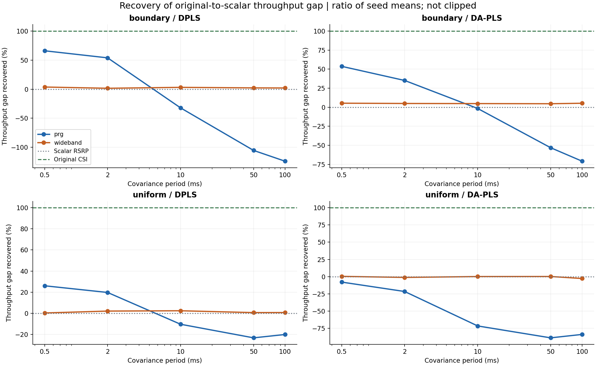
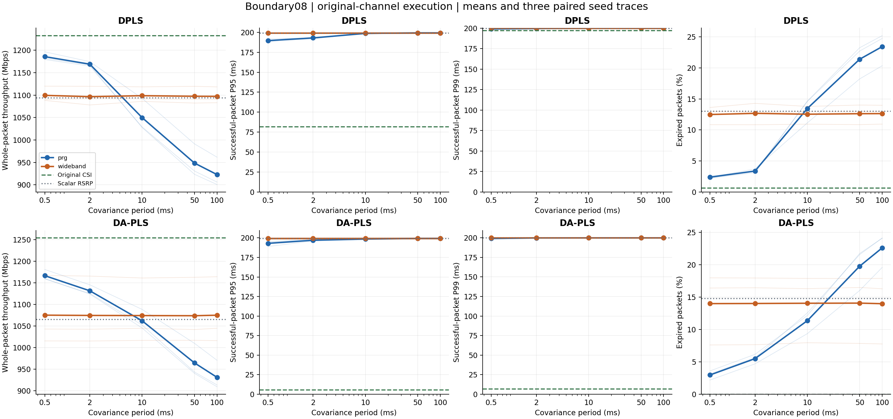
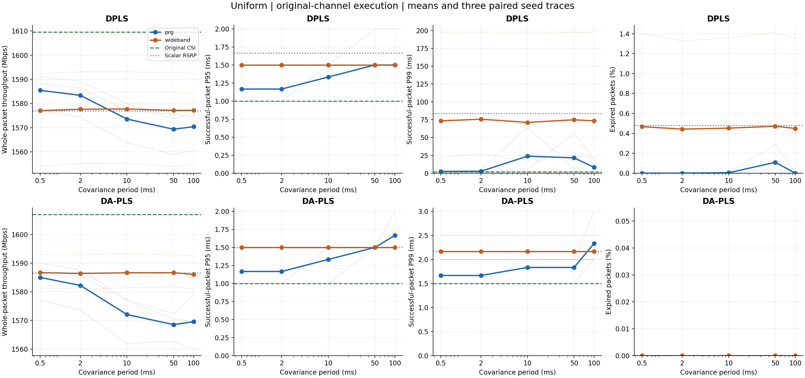
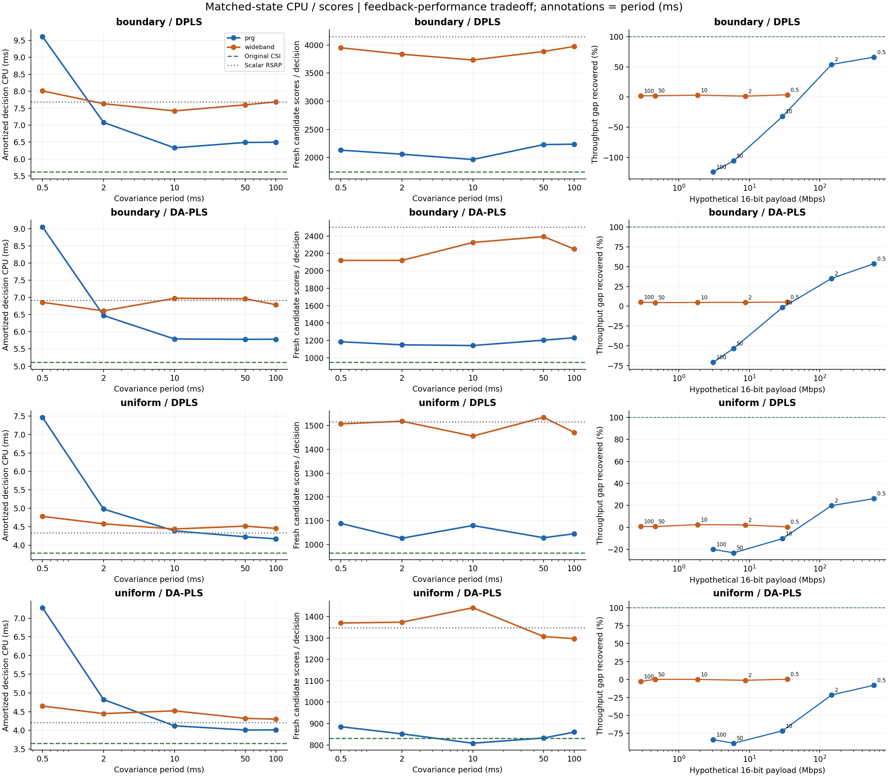
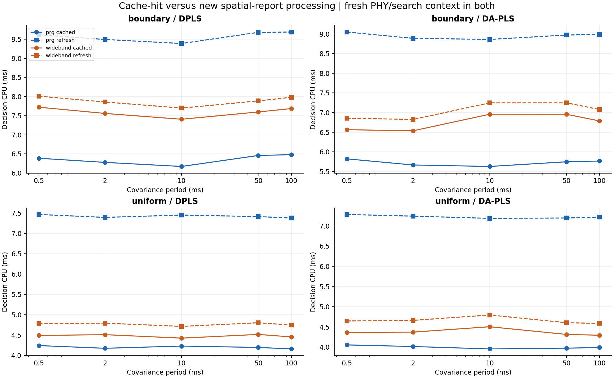
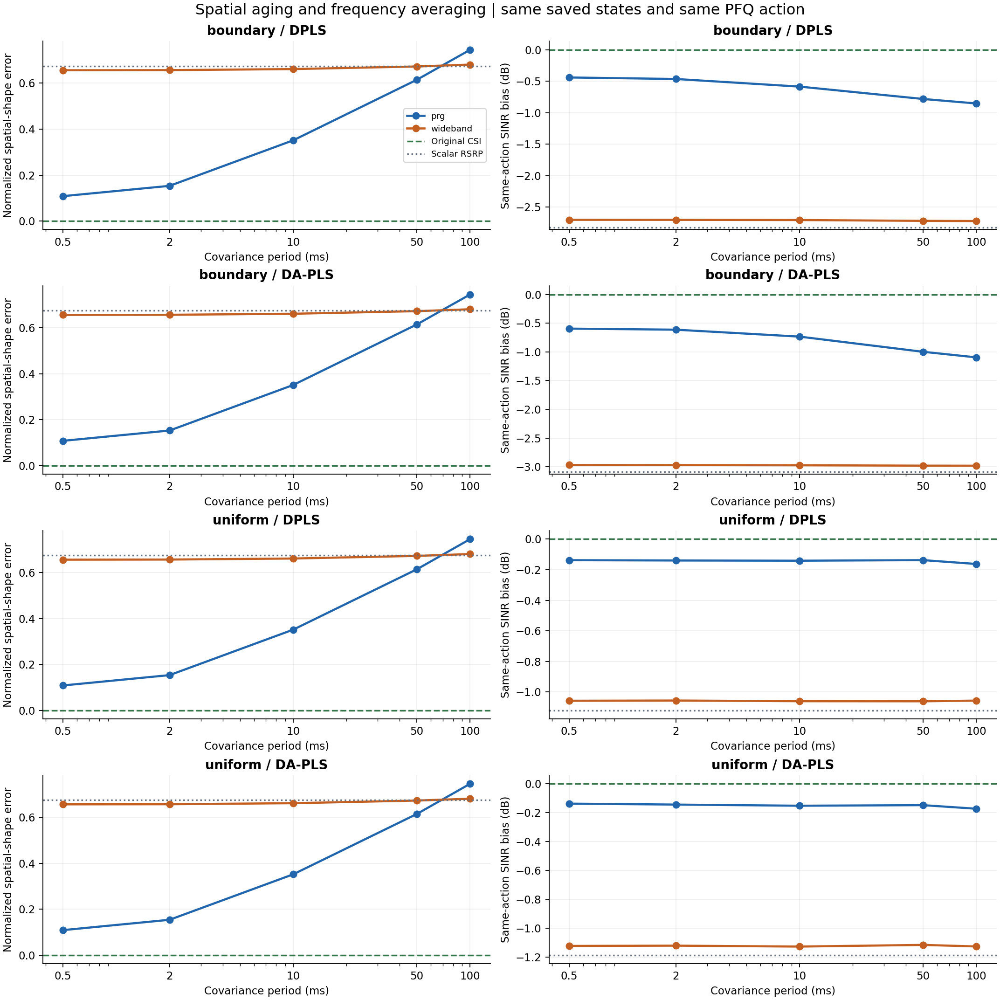
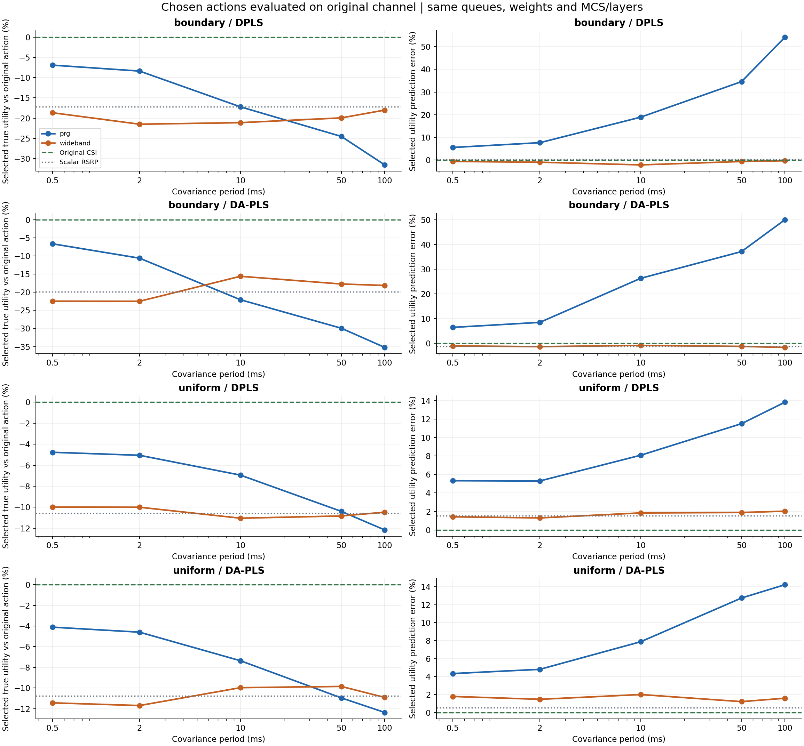

2026-11-10 · 三小区 Boundary08 / Uniform · DPLS / DA-PLS · seeds 41–43
144 条正式轨迹：120 条新增，24 条已验证原版／纯 RSRP 端点复用。每条测量 10 秒。 两种频域粒度 × 五个更新周期；执行端始终使用原始瞬时信道，服务 CSI、MCS／层数／OLLA 和搜索器保持原协议。
C = H Hᴴ R = 4C / trace(C)，trace(R) = 4 估计邻区干扰协方差 Ĉ = 4 × beta_RSRP × R_reported 纯 RSRP 对应 R = I₄
逐 PRG 方案保留每个 UE／邻区／PRG 的方向结构；宽带方案先对 17 个 PRG 的 C 求平均，再归一化，一份矩阵用于全部 PRG。 更新周期为 0.5、2、10、50、100 ms，均有 0.5 ms 传输延迟。因此最快点也不是零延迟 oracle。
RSRP 仍采用原来的单参考端口功率、100 ms 因果 EMA、10 ms 上报和 0.5 ms 传输。 空间协方差不另加时间滤波：本轮隔离慢速采样／保持造成的老化，而不是同时改变空间统计窗口。 归一化矩阵是额外测量信息，不能从 RSRP 标量推导出来；这里假设能获得理想的分邻区、全端口空间测量。
恢复方向结构不恢复逐 PRG 瞬时总功率；宽带 RSRP 的端口、滤波和上报误差仍在。 因此本轮恢复比例不是对上一轮“空间步骤损失份额”的机械逆运算，两者还存在交互和闭环轨迹变化。
以下列出扫描内吞吐均值最高的点，用于快速定位曲线；它不是经独立验证或多重比较校正的“最优周期”。
| scene | objective | granularity | period_ms | payload_mbps | payload_mbps_gap_recovered_pct | delay_p95_ms | delay_p99_ms | expiry_pct | amortized_cpu_ms | amortized_cpu_ms_change_vs_scalar_pct | payload_mbps_at_16bits |
|---|---|---|---|---|---|---|---|---|---|---|---|
| boundary | DPLS | prg | 0.500 | 1185.699 | 65.981 | 189.667 | 199.000 | 2.383 | 9.615 | 25.102 | 587.635 |
| boundary | DPLS | wideband | 0.500 | 1099.406 | 3.656 | 199.333 | 200.000 | 12.492 | 8.010 | 4.228 | 34.675 |
| boundary | DA-PLS | prg | 0.500 | 1166.927 | 53.617 | 193.000 | 199.167 | 2.967 | 9.049 | 30.995 | 587.635 |
| boundary | DA-PLS | wideband | 0.500 | 1075.448 | 5.295 | 199.167 | 200.000 | 13.987 | 6.856 | -0.754 | 34.675 |
| uniform | DPLS | prg | 0.500 | 1585.434 | 26.097 | 1.167 | 2.333 | 0.000 | 7.467 | 72.226 | 587.635 |
| uniform | DPLS | wideband | 10.000 | 1577.716 | 2.478 | 1.500 | 71.167 | 0.452 | 4.437 | 2.346 | 1.843 |
| uniform | DA-PLS | prg | 0.500 | 1585.032 | -7.921 | 1.167 | 1.667 | 0.000 | 7.280 | 72.979 | 587.635 |
| uniform | DA-PLS | wideband | 0.500 | 1586.731 | 0.416 | 1.500 | 2.167 | 0.000 | 4.649 | 10.453 | 34.675 |
吞吐恢复比例 = (新方案 − 纯 RSRP) / (原版 − 纯 RSRP)。时延／过期率改用相反方向，恢复比例同样以原版到纯 RSRP 的差距为分母。 采用三个 seed 等权均值之比，不裁剪到 0～100%；负值表示更差，超过 100% 表示本次均值超过原版。原始差距为零时记为“—”，不硬算恢复率。



粗线为三 seed 均值，细线为逐 seed 轨迹；水平线是原版和纯 RSRP 均值。P95/P99 只统计成功包。 包 TTL 为 200 ms，成功包尾时延接近上限时，需要同时看过期率，不能把尾时延趋平解释为服务没有继续恶化。
| scene | objective | granularity | period_ms | payload_mbps | payload_mbps_gap_recovered_pct | delay_p95_ms | delay_p99_ms | expiry_pct | amortized_cpu_ms | amortized_cpu_ms_change_vs_scalar_pct | payload_mbps_at_16bits |
|---|---|---|---|---|---|---|---|---|---|---|---|
| boundary | DPLS | prg | 0.500 | 1185.699 | 65.981 | 189.667 | 199.000 | 2.383 | 9.615 | 25.102 | 587.635 |
| boundary | DPLS | prg | 2.000 | 1168.895 | 53.844 | 193.000 | 199.500 | 3.377 | 7.082 | -7.858 | 146.995 |
| boundary | DPLS | prg | 10.000 | 1049.764 | -32.198 | 198.667 | 200.000 | 13.462 | 6.331 | -17.618 | 29.491 |
| boundary | DPLS | prg | 50.000 | 948.490 | -105.342 | 199.333 | 200.000 | 21.405 | 6.491 | -15.547 | 5.990 |
| boundary | DPLS | prg | 100.000 | 922.845 | -123.864 | 199.333 | 200.000 | 23.437 | 6.496 | -15.475 | 3.053 |
| boundary | DPLS | wideband | 0.500 | 1099.406 | 3.656 | 199.333 | 200.000 | 12.492 | 8.010 | 4.228 | 34.675 |
| boundary | DPLS | wideband | 2.000 | 1096.472 | 1.537 | 199.333 | 200.000 | 12.677 | 7.633 | -0.683 | 8.755 |
| boundary | DPLS | wideband | 10.000 | 1098.647 | 3.108 | 199.333 | 200.000 | 12.540 | 7.420 | -3.449 | 1.843 |
| boundary | DPLS | wideband | 50.000 | 1097.373 | 2.188 | 199.333 | 200.000 | 12.623 | 7.600 | -1.118 | 0.461 |
| boundary | DPLS | wideband | 100.000 | 1097.146 | 2.023 | 199.333 | 200.000 | 12.635 | 7.687 | 0.021 | 0.288 |
| boundary | DA-PLS | prg | 0.500 | 1166.927 | 53.617 | 193.000 | 199.167 | 2.967 | 9.049 | 30.995 | 587.635 |
| boundary | DA-PLS | prg | 2.000 | 1131.880 | 35.104 | 197.000 | 199.833 | 5.491 | 6.472 | -6.310 | 146.995 |
| boundary | DA-PLS | prg | 10.000 | 1062.358 | -1.619 | 198.500 | 200.000 | 11.349 | 5.790 | -16.187 | 29.491 |
| boundary | DA-PLS | prg | 50.000 | 964.893 | -53.103 | 199.333 | 200.000 | 19.765 | 5.780 | -16.336 | 5.990 |
| boundary | DA-PLS | prg | 100.000 | 931.427 | -70.780 | 199.333 | 200.000 | 22.590 | 5.783 | -16.293 | 3.053 |
| boundary | DA-PLS | wideband | 0.500 | 1075.448 | 5.295 | 199.167 | 200.000 | 13.987 | 6.856 | -0.754 | 34.675 |
| boundary | DA-PLS | wideband | 2.000 | 1074.773 | 4.939 | 199.167 | 200.000 | 14.006 | 6.608 | -4.347 | 8.755 |
| boundary | DA-PLS | wideband | 10.000 | 1074.479 | 4.784 | 199.167 | 200.000 | 14.042 | 6.972 | 0.925 | 1.843 |
| boundary | DA-PLS | wideband | 50.000 | 1074.131 | 4.600 | 199.167 | 200.000 | 14.063 | 6.960 | 0.749 | 0.461 |
| boundary | DA-PLS | wideband | 100.000 | 1075.316 | 5.226 | 199.167 | 200.000 | 13.974 | 6.789 | -1.724 | 0.288 |
| uniform | DPLS | prg | 0.500 | 1585.434 | 26.097 | 1.167 | 2.333 | 0.000 | 7.467 | 72.226 | 587.635 |
| uniform | DPLS | prg | 2.000 | 1583.370 | 19.783 | 1.167 | 2.667 | 0.000 | 4.978 | 14.827 | 146.995 |
| uniform | DPLS | prg | 10.000 | 1573.545 | -10.288 | 1.333 | 23.833 | 0.004 | 4.388 | 1.219 | 29.491 |
| uniform | DPLS | prg | 50.000 | 1569.346 | -23.140 | 1.500 | 21.500 | 0.109 | 4.226 | -2.532 | 5.990 |
| uniform | DPLS | prg | 100.000 | 1570.376 | -19.986 | 1.500 | 8.223 | 0.000 | 4.173 | -3.743 | 3.053 |
| uniform | DPLS | wideband | 0.500 | 1577.035 | 0.394 | 1.500 | 73.333 | 0.467 | 4.780 | 10.248 | 34.675 |
| uniform | DPLS | wideband | 2.000 | 1577.617 | 2.174 | 1.500 | 75.667 | 0.442 | 4.579 | 5.612 | 8.755 |
| uniform | DPLS | wideband | 10.000 | 1577.716 | 2.478 | 1.500 | 71.167 | 0.452 | 4.437 | 2.346 | 1.843 |
| uniform | DPLS | wideband | 50.000 | 1577.150 | 0.744 | 1.500 | 74.833 | 0.471 | 4.517 | 4.182 | 0.461 |
| uniform | DPLS | wideband | 100.000 | 1577.168 | 0.801 | 1.500 | 73.333 | 0.449 | 4.454 | 2.732 | 0.288 |
| uniform | DA-PLS | prg | 0.500 | 1585.032 | -7.921 | 1.167 | 1.667 | 0.000 | 7.280 | 72.979 | 587.635 |
| uniform | DA-PLS | prg | 2.000 | 1582.259 | -21.526 | 1.167 | 1.667 | 0.000 | 4.823 | 14.587 | 146.995 |
| uniform | DA-PLS | prg | 10.000 | 1572.087 | -71.436 | 1.333 | 1.833 | 0.000 | 4.119 | -2.130 | 29.491 |
| uniform | DA-PLS | prg | 50.000 | 1568.570 | -88.695 | 1.500 | 1.833 | 0.000 | 4.009 | -4.760 | 5.990 |
| uniform | DA-PLS | prg | 100.000 | 1569.580 | -83.738 | 1.667 | 2.333 | 0.000 | 4.009 | -4.749 | 3.053 |
| uniform | DA-PLS | wideband | 0.500 | 1586.731 | 0.416 | 1.500 | 2.167 | 0.000 | 4.649 | 10.453 | 34.675 |
| uniform | DA-PLS | wideband | 2.000 | 1586.420 | -1.111 | 1.500 | 2.167 | 0.000 | 4.446 | 5.627 | 8.755 |
| uniform | DA-PLS | wideband | 10.000 | 1586.677 | 0.149 | 1.500 | 2.167 | 0.000 | 4.521 | 7.405 | 1.843 |
| uniform | DA-PLS | wideband | 50.000 | 1586.693 | 0.228 | 1.500 | 2.167 | 0.000 | 4.320 | 2.629 | 0.461 |
| uniform | DA-PLS | wideband | 100.000 | 1586.098 | -2.689 | 1.500 | 2.167 | 0.000 | 4.297 | 2.095 | 0.288 |
| scene | objective | granularity | period_ms | payload_mbps_gap_recovered_pct | delay_p95_ms_gap_recovered_pct | delay_p99_ms_gap_recovered_pct | expiry_pct_gap_recovered_pct |
|---|---|---|---|---|---|---|---|
| boundary | deficit | prg | 0.500 | 65.981 | 8.239 | 37.500 | 86.161 |
| boundary | deficit | prg | 2.000 | 53.844 | 5.398 | 18.750 | 78.123 |
| boundary | deficit | prg | 10.000 | -32.198 | 0.568 | 0.000 | -3.474 |
| boundary | deficit | prg | 50.000 | -105.342 | 0.000 | 0.000 | -67.736 |
| boundary | deficit | prg | 100.000 | -123.864 | 0.000 | 0.000 | -84.179 |
| boundary | deficit | wideband | 0.500 | 3.656 | 0.000 | 0.000 | 4.377 |
| boundary | deficit | wideband | 2.000 | 1.537 | 0.000 | 0.000 | 2.874 |
| boundary | deficit | wideband | 10.000 | 3.108 | 0.000 | 0.000 | 3.987 |
| boundary | deficit | wideband | 50.000 | 2.188 | 0.000 | 0.000 | 3.317 |
| boundary | deficit | wideband | 100.000 | 2.023 | 0.000 | 0.000 | 3.213 |
| boundary | mlwdf_pf | prg | 0.500 | 53.617 | 3.184 | 0.432 | 79.938 |
| boundary | mlwdf_pf | prg | 2.000 | 35.104 | 1.119 | 0.086 | 62.874 |
| boundary | mlwdf_pf | prg | 10.000 | -1.619 | 0.344 | 0.000 | 23.270 |
| boundary | mlwdf_pf | prg | 50.000 | -53.103 | -0.086 | 0.000 | -33.624 |
| boundary | mlwdf_pf | prg | 100.000 | -70.780 | -0.086 | 0.000 | -52.726 |
| boundary | mlwdf_pf | wideband | 0.500 | 5.295 | 0.000 | 0.000 | 5.438 |
| boundary | mlwdf_pf | wideband | 2.000 | 4.939 | 0.000 | 0.000 | 5.309 |
| boundary | mlwdf_pf | wideband | 10.000 | 4.784 | 0.000 | 0.000 | 5.065 |
| boundary | mlwdf_pf | wideband | 50.000 | 4.600 | 0.000 | 0.000 | 4.925 |
| boundary | mlwdf_pf | wideband | 100.000 | 5.226 | 0.000 | 0.000 | 5.527 |
| uniform | deficit | prg | 0.500 | 26.097 | 75.000 | 99.389 | 100.000 |
| uniform | deficit | prg | 2.000 | 19.783 | 75.000 | 98.982 | 100.000 |
| uniform | deficit | prg | 10.000 | -10.288 | 50.000 | 73.122 | 99.128 |
| uniform | deficit | prg | 50.000 | -23.140 | 25.000 | 75.973 | 77.115 |
| uniform | deficit | prg | 100.000 | -19.986 | 25.000 | 92.193 | 100.000 |
| uniform | deficit | wideband | 0.500 | 0.394 | 25.000 | 12.647 | 2.285 |
| uniform | deficit | wideband | 2.000 | 2.174 | 25.000 | 9.796 | 7.506 |
| uniform | deficit | wideband | 10.000 | 2.478 | 25.000 | 15.294 | 5.462 |
| uniform | deficit | wideband | 50.000 | 0.744 | 25.000 | 10.814 | 1.481 |
| uniform | deficit | wideband | 100.000 | 0.801 | 25.000 | 12.647 | 6.082 |
| uniform | mlwdf_pf | prg | 0.500 | -7.921 | 66.667 | 75.000 | — |
| uniform | mlwdf_pf | prg | 2.000 | -21.526 | 66.667 | 75.000 | — |
| uniform | mlwdf_pf | prg | 10.000 | -71.436 | 33.333 | 50.000 | — |
| uniform | mlwdf_pf | prg | 50.000 | -88.695 | 0.000 | 50.000 | — |
| uniform | mlwdf_pf | prg | 100.000 | -83.738 | -33.333 | -25.000 | — |
| uniform | mlwdf_pf | wideband | 0.500 | 0.416 | 0.000 | 0.000 | — |
| uniform | mlwdf_pf | wideband | 2.000 | -1.111 | 0.000 | 0.000 | — |
| uniform | mlwdf_pf | wideband | 10.000 | 0.149 | 0.000 | 0.000 | — |
| uniform | mlwdf_pf | wideband | 50.000 | 0.228 | 0.000 | 0.000 | — |
| uniform | mlwdf_pf | wideband | 100.000 | -2.689 | 0.000 | 0.000 | — |
| scene | objective | stage | payload_mbps | delay_p95_ms | delay_p99_ms | expiry_pct | amortized_cpu_ms |
|---|---|---|---|---|---|---|---|
| boundary | deficit | exact | 1232.802 | 82.000 | 197.333 | 0.673 | 5.618 |
| boundary | deficit | reported | 1094.344 | 199.333 | 200.000 | 13.033 | 7.685 |
| boundary | mlwdf_pf | exact | 1254.737 | 5.500 | 7.000 | 0.000 | 5.109 |
| boundary | mlwdf_pf | reported | 1065.423 | 199.167 | 200.000 | 14.791 | 6.908 |
| uniform | deficit | exact | 1609.581 | 1.000 | 1.833 | 0.000 | 3.792 |
| uniform | deficit | reported | 1576.906 | 1.667 | 83.685 | 0.478 | 4.335 |
| uniform | mlwdf_pf | exact | 1607.027 | 1.000 | 1.500 | 0.000 | 3.654 |
| uniform | mlwdf_pf | reported | 1586.646 | 1.500 | 2.167 | 0.000 | 4.209 |
完整包吞吐采用测量期到达包并随访至终态；MAC 成功字节吞吐统计测量 TTI 内的成功字节，二者的边界包口径也不同。 HARQ 关闭时，失败字节仍出队，所以零过期不等于所有包都完整交付。
| scene | objective | stage | payload_mbps | goodput_mbps | expiry_pct | other_nondelivery_pct | actual_tb_bler |
|---|---|---|---|---|---|---|---|
| boundary | deficit | exact | 1232.802 | 1292.437 | 0.673 | 10.170 | 0.091 |
| boundary | deficit | prg_t1 | 1185.699 | 1244.292 | 2.383 | 11.866 | 0.091 |
| boundary | deficit | prg_t4 | 1168.895 | 1226.760 | 3.377 | 12.087 | 0.091 |
| boundary | deficit | prg_t20 | 1049.764 | 1118.387 | 13.462 | 10.620 | 0.087 |
| boundary | deficit | prg_t100 | 948.490 | 1022.073 | 21.405 | 10.002 | 0.091 |
| boundary | deficit | prg_t200 | 922.845 | 997.758 | 23.437 | 9.824 | 0.091 |
| boundary | deficit | reported | 1094.344 | 1171.220 | 13.033 | 7.824 | 0.091 |
| boundary | deficit | wideband_t1 | 1099.406 | 1176.054 | 12.492 | 7.999 | 0.091 |
| boundary | deficit | wideband_t4 | 1096.472 | 1173.922 | 12.677 | 8.026 | 0.091 |
| boundary | deficit | wideband_t20 | 1098.647 | 1175.784 | 12.540 | 8.006 | 0.091 |
| boundary | deficit | wideband_t100 | 1097.373 | 1174.590 | 12.623 | 8.015 | 0.091 |
| boundary | deficit | wideband_t200 | 1097.146 | 1174.664 | 12.635 | 8.019 | 0.091 |
| boundary | mlwdf_pf | exact | 1254.737 | 1312.356 | 0.000 | 9.256 | 0.091 |
| boundary | mlwdf_pf | prg_t1 | 1166.927 | 1240.814 | 2.967 | 12.640 | 0.091 |
| boundary | mlwdf_pf | prg_t4 | 1131.880 | 1208.475 | 5.491 | 12.650 | 0.091 |
| boundary | mlwdf_pf | prg_t20 | 1062.358 | 1136.762 | 11.349 | 11.821 | 0.091 |
| boundary | mlwdf_pf | prg_t100 | 964.893 | 1038.719 | 19.765 | 10.456 | 0.091 |
| boundary | mlwdf_pf | prg_t200 | 931.427 | 1006.196 | 22.590 | 10.050 | 0.091 |
| boundary | mlwdf_pf | reported | 1065.423 | 1161.217 | 14.791 | 8.161 | 0.091 |
| boundary | mlwdf_pf | wideband_t1 | 1075.448 | 1169.643 | 13.987 | 8.241 | 0.091 |
| boundary | mlwdf_pf | wideband_t4 | 1074.773 | 1169.244 | 14.006 | 8.270 | 0.091 |
| boundary | mlwdf_pf | wideband_t20 | 1074.479 | 1168.366 | 14.042 | 8.255 | 0.091 |
| boundary | mlwdf_pf | wideband_t100 | 1074.131 | 1168.180 | 14.063 | 8.260 | 0.091 |
| boundary | mlwdf_pf | wideband_t200 | 1075.316 | 1169.040 | 13.974 | 8.263 | 0.091 |
| uniform | deficit | exact | 1609.581 | 1625.184 | 0.000 | 6.812 | 0.080 |
| uniform | deficit | prg_t1 | 1585.434 | 1604.485 | 0.000 | 8.210 | 0.085 |
| uniform | deficit | prg_t4 | 1583.370 | 1602.543 | 0.000 | 8.330 | 0.085 |
| uniform | deficit | prg_t20 | 1573.545 | 1595.102 | 0.004 | 8.894 | 0.085 |
| uniform | deficit | prg_t100 | 1569.346 | 1592.976 | 0.109 | 9.032 | 0.084 |
| uniform | deficit | prg_t200 | 1570.376 | 1593.650 | 0.000 | 9.082 | 0.085 |
| uniform | deficit | reported | 1576.906 | 1604.826 | 0.478 | 8.226 | 0.086 |
| uniform | deficit | wideband_t1 | 1577.035 | 1604.618 | 0.467 | 8.229 | 0.086 |
| uniform | deficit | wideband_t4 | 1577.617 | 1605.038 | 0.442 | 8.221 | 0.086 |
| uniform | deficit | wideband_t20 | 1577.716 | 1605.151 | 0.452 | 8.205 | 0.086 |
| uniform | deficit | wideband_t100 | 1577.150 | 1604.485 | 0.471 | 8.219 | 0.086 |
| uniform | deficit | wideband_t200 | 1577.168 | 1604.380 | 0.449 | 8.240 | 0.086 |
| uniform | mlwdf_pf | exact | 1607.027 | 1622.057 | 0.000 | 6.960 | 0.081 |
| uniform | mlwdf_pf | prg_t1 | 1585.032 | 1603.593 | 0.000 | 8.234 | 0.085 |
| uniform | mlwdf_pf | prg_t4 | 1582.259 | 1601.177 | 0.000 | 8.394 | 0.085 |
| uniform | mlwdf_pf | prg_t20 | 1572.087 | 1593.626 | 0.000 | 8.983 | 0.085 |
| uniform | mlwdf_pf | prg_t100 | 1568.570 | 1591.609 | 0.000 | 9.187 | 0.086 |
| uniform | mlwdf_pf | prg_t200 | 1569.580 | 1595.920 | 0.000 | 9.128 | 0.086 |
| uniform | mlwdf_pf | reported | 1586.646 | 1612.168 | 0.000 | 8.140 | 0.086 |
| uniform | mlwdf_pf | wideband_t1 | 1586.731 | 1611.586 | 0.000 | 8.135 | 0.086 |
| uniform | mlwdf_pf | wideband_t4 | 1586.420 | 1611.441 | 0.000 | 8.153 | 0.086 |
| uniform | mlwdf_pf | wideband_t20 | 1586.677 | 1611.563 | 0.000 | 8.138 | 0.086 |
| uniform | mlwdf_pf | wideband_t100 | 1586.693 | 1611.490 | 0.000 | 8.137 | 0.086 |
| uniform | mlwdf_pf | wideband_t200 | 1586.098 | 1611.042 | 0.000 | 8.172 | 0.086 |
下表逐 seed 统计 36 个 UE 中有过期包的数量、成功包 P95 超过 100 ms 的数量，以及没有成功包而无法定义该分位数的数量。 100 ms 是描述性阈值。吞吐恢复率不能替代各 UE 的排队改善；没有成功包的 UE 也不能被当作低时延 UE。
| scene | objective | stage | seed | ues_with_expiry | ues_p95_above_100ms | ues_without_success |
|---|---|---|---|---|---|---|
| boundary | deficit | exact | 41 | 2 | 2 | 0 |
| boundary | deficit | exact | 42 | 2 | 2 | 0 |
| boundary | deficit | exact | 43 | 2 | 4 | 0 |
| boundary | deficit | prg_t1 | 41 | 6 | 7 | 0 |
| boundary | deficit | prg_t1 | 42 | 8 | 11 | 0 |
| boundary | deficit | prg_t1 | 43 | 9 | 10 | 0 |
| boundary | deficit | prg_t200 | 41 | 24 | 25 | 0 |
| boundary | deficit | prg_t200 | 42 | 26 | 28 | 0 |
| boundary | deficit | prg_t200 | 43 | 29 | 29 | 0 |
| boundary | deficit | reported | 41 | 11 | 12 | 0 |
| boundary | deficit | reported | 42 | 19 | 19 | 0 |
| boundary | deficit | reported | 43 | 15 | 17 | 0 |
| boundary | mlwdf_pf | exact | 41 | 0 | 0 | 0 |
| boundary | mlwdf_pf | exact | 42 | 0 | 0 | 0 |
| boundary | mlwdf_pf | exact | 43 | 0 | 0 | 0 |
| boundary | mlwdf_pf | prg_t1 | 41 | 11 | 19 | 0 |
| boundary | mlwdf_pf | prg_t1 | 42 | 17 | 32 | 0 |
| boundary | mlwdf_pf | prg_t1 | 43 | 17 | 29 | 0 |
| boundary | mlwdf_pf | prg_t200 | 41 | 27 | 36 | 0 |
| boundary | mlwdf_pf | prg_t200 | 42 | 30 | 35 | 0 |
| boundary | mlwdf_pf | prg_t200 | 43 | 30 | 36 | 0 |
| boundary | mlwdf_pf | reported | 41 | 13 | 22 | 0 |
| boundary | mlwdf_pf | reported | 42 | 24 | 30 | 0 |
| boundary | mlwdf_pf | reported | 43 | 19 | 29 | 0 |
nominal 95% 配对 t 区间，n=3，无多重比较修正。区间跨零不表示等价；恢复比例本身没有据此构造比值置信区间。
| scene | objective | stage | control | metric | n | mean_delta | ci_low | ci_high |
|---|---|---|---|---|---|---|---|---|
| boundary | deficit | prg_t1 | exact | payload_mbps | 3 | -47.102 | -55.614 | -38.591 |
| boundary | deficit | prg_t1 | exact | delay_p95_ms | 3 | 107.667 | -0.074 | 215.407 |
| boundary | deficit | prg_t1 | exact | delay_p99_ms | 3 | 1.667 | 0.232 | 3.101 |
| boundary | deficit | prg_t1 | exact | expiry_pct | 3 | 1.710 | 1.003 | 2.418 |
| boundary | deficit | prg_t1 | reported | payload_mbps | 3 | 91.355 | 61.236 | 121.474 |
| boundary | deficit | prg_t1 | reported | delay_p95_ms | 3 | -9.667 | -14.369 | -4.964 |
| boundary | deficit | prg_t1 | reported | delay_p99_ms | 3 | -1.000 | -1.000 | -1.000 |
| boundary | deficit | prg_t1 | reported | expiry_pct | 3 | -10.649 | -15.007 | -6.291 |
| boundary | deficit | prg_t100 | exact | payload_mbps | 3 | -284.312 | -358.565 | -210.059 |
| boundary | deficit | prg_t100 | exact | delay_p95_ms | 3 | 117.333 | 4.898 | 229.769 |
| boundary | deficit | prg_t100 | exact | delay_p99_ms | 3 | 2.667 | 1.232 | 4.101 |
| boundary | deficit | prg_t100 | exact | expiry_pct | 3 | 20.732 | 13.927 | 27.536 |
| boundary | deficit | prg_t100 | reported | payload_mbps | 3 | -145.854 | -190.621 | -101.088 |
| boundary | deficit | prg_t100 | reported | delay_p95_ms | 3 | 0.000 | 0.000 | 0.000 |
| boundary | deficit | prg_t100 | reported | delay_p99_ms | 3 | 0.000 | 0.000 | 0.000 |
| boundary | deficit | prg_t100 | reported | expiry_pct | 3 | 8.372 | 5.266 | 11.478 |
| boundary | deficit | prg_t20 | exact | payload_mbps | 3 | -183.038 | -257.520 | -108.555 |
| boundary | deficit | prg_t20 | exact | delay_p95_ms | 3 | 116.667 | 4.465 | 228.868 |
| boundary | deficit | prg_t20 | exact | delay_p99_ms | 3 | 2.667 | 1.232 | 4.101 |
| boundary | deficit | prg_t20 | exact | expiry_pct | 3 | 12.789 | 7.823 | 17.755 |
| boundary | deficit | prg_t20 | reported | payload_mbps | 3 | -44.580 | -91.299 | 2.139 |
| boundary | deficit | prg_t20 | reported | delay_p95_ms | 3 | -0.667 | -1.384 | 0.050 |
| boundary | deficit | prg_t20 | reported | delay_p99_ms | 3 | 0.000 | 0.000 | 0.000 |
| boundary | deficit | prg_t20 | reported | expiry_pct | 3 | 0.429 | -1.461 | 2.320 |
| boundary | deficit | prg_t200 | exact | payload_mbps | 3 | -309.957 | -375.573 | -244.341 |
| boundary | deficit | prg_t200 | exact | delay_p95_ms | 3 | 117.333 | 4.898 | 229.769 |
| boundary | deficit | prg_t200 | exact | delay_p99_ms | 3 | 2.667 | 1.232 | 4.101 |
| boundary | deficit | prg_t200 | exact | expiry_pct | 3 | 22.764 | 16.154 | 29.374 |
| boundary | deficit | prg_t200 | reported | payload_mbps | 3 | -171.499 | -208.246 | -134.753 |
| boundary | deficit | prg_t200 | reported | delay_p95_ms | 3 | 0.000 | 0.000 | 0.000 |
| boundary | deficit | prg_t200 | reported | delay_p99_ms | 3 | 0.000 | 0.000 | 0.000 |
| boundary | deficit | prg_t200 | reported | expiry_pct | 3 | 10.404 | 7.443 | 13.365 |
| boundary | deficit | prg_t4 | exact | payload_mbps | 3 | -63.906 | -73.106 | -54.707 |
| boundary | deficit | prg_t4 | exact | delay_p95_ms | 3 | 111.000 | -1.248 | 223.248 |
| boundary | deficit | prg_t4 | exact | delay_p99_ms | 3 | 2.167 | 0.732 | 3.601 |
| boundary | deficit | prg_t4 | exact | expiry_pct | 3 | 2.704 | 1.794 | 3.614 |
| boundary | deficit | prg_t4 | reported | payload_mbps | 3 | 74.551 | 34.746 | 114.356 |
| boundary | deficit | prg_t4 | reported | delay_p95_ms | 3 | -6.333 | -9.459 | -3.208 |
| boundary | deficit | prg_t4 | reported | delay_p99_ms | 3 | -0.500 | -0.500 | -0.500 |
| boundary | deficit | prg_t4 | reported | expiry_pct | 3 | -9.656 | -14.581 | -4.730 |
| boundary | deficit | reported | exact | payload_mbps | 3 | -138.458 | -170.059 | -106.856 |
| boundary | deficit | reported | exact | delay_p95_ms | 3 | 117.333 | 4.898 | 229.769 |
| boundary | deficit | reported | exact | delay_p99_ms | 3 | 2.667 | 1.232 | 4.101 |
| boundary | deficit | reported | exact | expiry_pct | 3 | 12.360 | 8.319 | 16.401 |
| boundary | deficit | reported | reported | payload_mbps | 3 | 0.000 | 0.000 | 0.000 |
| boundary | deficit | reported | reported | delay_p95_ms | 3 | 0.000 | 0.000 | 0.000 |
| boundary | deficit | reported | reported | delay_p99_ms | 3 | 0.000 | 0.000 | 0.000 |
| boundary | deficit | reported | reported | expiry_pct | 3 | 0.000 | 0.000 | 0.000 |
| boundary | deficit | wideband_t1 | exact | payload_mbps | 3 | -133.396 | -159.558 | -107.234 |
| boundary | deficit | wideband_t1 | exact | delay_p95_ms | 3 | 117.333 | 4.898 | 229.769 |
| boundary | deficit | wideband_t1 | exact | delay_p99_ms | 3 | 2.667 | 1.232 | 4.101 |
| boundary | deficit | wideband_t1 | exact | expiry_pct | 3 | 11.819 | 8.293 | 15.344 |
| boundary | deficit | wideband_t1 | reported | payload_mbps | 3 | 5.062 | -7.725 | 17.848 |
| boundary | deficit | wideband_t1 | reported | delay_p95_ms | 3 | 0.000 | 0.000 | 0.000 |
| boundary | deficit | wideband_t1 | reported | delay_p99_ms | 3 | 0.000 | 0.000 | 0.000 |
| boundary | deficit | wideband_t1 | reported | expiry_pct | 3 | -0.541 | -1.407 | 0.325 |
| boundary | deficit | wideband_t100 | exact | payload_mbps | 3 | -135.429 | -165.846 | -105.012 |
| boundary | deficit | wideband_t100 | exact | delay_p95_ms | 3 | 117.333 | 4.898 | 229.769 |
| boundary | deficit | wideband_t100 | exact | delay_p99_ms | 3 | 2.667 | 1.232 | 4.101 |
| boundary | deficit | wideband_t100 | exact | expiry_pct | 3 | 11.950 | 8.063 | 15.836 |
| boundary | deficit | wideband_t100 | reported | payload_mbps | 3 | 3.029 | -1.778 | 7.836 |
| boundary | deficit | wideband_t100 | reported | delay_p95_ms | 3 | 0.000 | 0.000 | 0.000 |
| boundary | deficit | wideband_t100 | reported | delay_p99_ms | 3 | 0.000 | 0.000 | 0.000 |
| boundary | deficit | wideband_t100 | reported | expiry_pct | 3 | -0.410 | -0.724 | -0.096 |
| boundary | deficit | wideband_t20 | exact | payload_mbps | 3 | -134.154 | -158.793 | -109.516 |
| boundary | deficit | wideband_t20 | exact | delay_p95_ms | 3 | 117.333 | 4.898 | 229.769 |
| boundary | deficit | wideband_t20 | exact | delay_p99_ms | 3 | 2.667 | 1.232 | 4.101 |
| boundary | deficit | wideband_t20 | exact | expiry_pct | 3 | 11.867 | 8.338 | 15.396 |
| boundary | deficit | wideband_t20 | reported | payload_mbps | 3 | 4.303 | -5.084 | 13.690 |
| boundary | deficit | wideband_t20 | reported | delay_p95_ms | 3 | 0.000 | 0.000 | 0.000 |
| boundary | deficit | wideband_t20 | reported | delay_p99_ms | 3 | 0.000 | 0.000 | 0.000 |
| boundary | deficit | wideband_t20 | reported | expiry_pct | 3 | -0.493 | -1.101 | 0.115 |
| boundary | deficit | wideband_t200 | exact | payload_mbps | 3 | -135.656 | -163.581 | -107.731 |
| boundary | deficit | wideband_t200 | exact | delay_p95_ms | 3 | 117.333 | 4.898 | 229.769 |
| boundary | deficit | wideband_t200 | exact | delay_p99_ms | 3 | 2.667 | 1.232 | 4.101 |
| boundary | deficit | wideband_t200 | exact | expiry_pct | 3 | 11.962 | 8.235 | 15.690 |
| boundary | deficit | wideband_t200 | reported | payload_mbps | 3 | 2.802 | -3.578 | 9.182 |
| boundary | deficit | wideband_t200 | reported | delay_p95_ms | 3 | 0.000 | 0.000 | 0.000 |
| boundary | deficit | wideband_t200 | reported | delay_p99_ms | 3 | 0.000 | 0.000 | 0.000 |
| boundary | deficit | wideband_t200 | reported | expiry_pct | 3 | -0.397 | -0.810 | 0.015 |
| boundary | deficit | wideband_t4 | exact | payload_mbps | 3 | -136.330 | -170.786 | -101.873 |
| boundary | deficit | wideband_t4 | exact | delay_p95_ms | 3 | 117.333 | 4.898 | 229.769 |
| boundary | deficit | wideband_t4 | exact | delay_p99_ms | 3 | 2.667 | 1.232 | 4.101 |
| boundary | deficit | wideband_t4 | exact | expiry_pct | 3 | 12.004 | 7.833 | 16.176 |
| boundary | deficit | wideband_t4 | reported | payload_mbps | 3 | 2.128 | -1.046 | 5.302 |
| boundary | deficit | wideband_t4 | reported | delay_p95_ms | 3 | 0.000 | 0.000 | 0.000 |
| boundary | deficit | wideband_t4 | reported | delay_p99_ms | 3 | 0.000 | 0.000 | 0.000 |
| boundary | deficit | wideband_t4 | reported | expiry_pct | 3 | -0.355 | -0.522 | -0.188 |
| boundary | mlwdf_pf | prg_t1 | exact | payload_mbps | 3 | -87.810 | -107.774 | -67.846 |
| boundary | mlwdf_pf | prg_t1 | exact | delay_p95_ms | 3 | 187.500 | 179.945 | 195.055 |
| boundary | mlwdf_pf | prg_t1 | exact | delay_p99_ms | 3 | 192.167 | 191.450 | 192.884 |
| boundary | mlwdf_pf | prg_t1 | exact | expiry_pct | 3 | 2.967 | 1.188 | 4.747 |
| boundary | mlwdf_pf | prg_t1 | reported | payload_mbps | 3 | 101.504 | -64.704 | 267.712 |
| boundary | mlwdf_pf | prg_t1 | reported | delay_p95_ms | 3 | -6.167 | -12.540 | 0.207 |
| boundary | mlwdf_pf | prg_t1 | reported | delay_p99_ms | 3 | -0.833 | -2.268 | 0.601 |
| boundary | mlwdf_pf | prg_t1 | reported | expiry_pct | 3 | -11.824 | -23.889 | 0.241 |
| boundary | mlwdf_pf | prg_t100 | exact | payload_mbps | 3 | -289.844 | -376.543 | -203.145 |
| boundary | mlwdf_pf | prg_t100 | exact | delay_p95_ms | 3 | 193.833 | 193.116 | 194.550 |
| boundary | mlwdf_pf | prg_t100 | exact | delay_p99_ms | 3 | 193.000 | 191.758 | 194.242 |
| boundary | mlwdf_pf | prg_t100 | exact | expiry_pct | 3 | 19.765 | 11.686 | 27.843 |
| boundary | mlwdf_pf | prg_t100 | reported | payload_mbps | 3 | -100.530 | -201.239 | 0.179 |
| boundary | mlwdf_pf | prg_t100 | reported | delay_p95_ms | 3 | 0.167 | -1.731 | 2.064 |
| boundary | mlwdf_pf | prg_t100 | reported | delay_p99_ms | 3 | 0.000 | 0.000 | 0.000 |
| boundary | mlwdf_pf | prg_t100 | reported | expiry_pct | 3 | 4.973 | -0.868 | 10.814 |
| boundary | mlwdf_pf | prg_t20 | exact | payload_mbps | 3 | -192.379 | -239.516 | -145.242 |
| boundary | mlwdf_pf | prg_t20 | exact | delay_p95_ms | 3 | 193.000 | 191.758 | 194.242 |
| boundary | mlwdf_pf | prg_t20 | exact | delay_p99_ms | 3 | 193.000 | 191.758 | 194.242 |
| boundary | mlwdf_pf | prg_t20 | exact | expiry_pct | 3 | 11.349 | 7.016 | 15.682 |
| boundary | mlwdf_pf | prg_t20 | reported | payload_mbps | 3 | -3.066 | -142.009 | 135.878 |
| boundary | mlwdf_pf | prg_t20 | reported | delay_p95_ms | 3 | -0.667 | -2.101 | 0.768 |
| boundary | mlwdf_pf | prg_t20 | reported | delay_p99_ms | 3 | 0.000 | 0.000 | 0.000 |
| boundary | mlwdf_pf | prg_t20 | reported | expiry_pct | 3 | -3.442 | -12.723 | 5.839 |
| boundary | mlwdf_pf | prg_t200 | exact | payload_mbps | 3 | -323.310 | -397.713 | -248.906 |
| boundary | mlwdf_pf | prg_t200 | exact | delay_p95_ms | 3 | 193.833 | 193.116 | 194.550 |
| boundary | mlwdf_pf | prg_t200 | exact | delay_p99_ms | 3 | 193.000 | 191.758 | 194.242 |
| boundary | mlwdf_pf | prg_t200 | exact | expiry_pct | 3 | 22.590 | 16.101 | 29.079 |
| boundary | mlwdf_pf | prg_t200 | reported | payload_mbps | 3 | -133.996 | -246.271 | -21.721 |
| boundary | mlwdf_pf | prg_t200 | reported | delay_p95_ms | 3 | 0.167 | -1.731 | 2.064 |
| boundary | mlwdf_pf | prg_t200 | reported | delay_p99_ms | 3 | 0.000 | 0.000 | 0.000 |
| boundary | mlwdf_pf | prg_t200 | reported | expiry_pct | 3 | 7.799 | 0.536 | 15.061 |
| boundary | mlwdf_pf | prg_t4 | exact | payload_mbps | 3 | -122.857 | -142.183 | -103.530 |
| boundary | mlwdf_pf | prg_t4 | exact | delay_p95_ms | 3 | 191.500 | 190.258 | 192.742 |
| boundary | mlwdf_pf | prg_t4 | exact | delay_p99_ms | 3 | 192.833 | 192.116 | 193.550 |
| boundary | mlwdf_pf | prg_t4 | exact | expiry_pct | 3 | 5.491 | 3.640 | 7.342 |
| boundary | mlwdf_pf | prg_t4 | reported | payload_mbps | 3 | 66.457 | -100.260 | 233.174 |
| boundary | mlwdf_pf | prg_t4 | reported | delay_p95_ms | 3 | -2.167 | -2.884 | -1.450 |
| boundary | mlwdf_pf | prg_t4 | reported | delay_p99_ms | 3 | -0.167 | -0.884 | 0.550 |
| boundary | mlwdf_pf | prg_t4 | reported | expiry_pct | 3 | -9.300 | -21.325 | 2.726 |
| boundary | mlwdf_pf | reported | exact | payload_mbps | 3 | -189.314 | -375.356 | -3.271 |
| boundary | mlwdf_pf | reported | exact | delay_p95_ms | 3 | 193.667 | 191.769 | 195.564 |
| boundary | mlwdf_pf | reported | exact | delay_p99_ms | 3 | 193.000 | 191.758 | 194.242 |
| boundary | mlwdf_pf | reported | exact | expiry_pct | 3 | 14.791 | 1.182 | 28.400 |
| boundary | mlwdf_pf | reported | reported | payload_mbps | 3 | 0.000 | 0.000 | 0.000 |
| boundary | mlwdf_pf | reported | reported | delay_p95_ms | 3 | 0.000 | 0.000 | 0.000 |
| boundary | mlwdf_pf | reported | reported | delay_p99_ms | 3 | 0.000 | 0.000 | 0.000 |
| boundary | mlwdf_pf | reported | reported | expiry_pct | 3 | 0.000 | 0.000 | 0.000 |
| boundary | mlwdf_pf | wideband_t1 | exact | payload_mbps | 3 | -179.289 | -369.515 | 10.937 |
| boundary | mlwdf_pf | wideband_t1 | exact | delay_p95_ms | 3 | 193.667 | 191.769 | 195.564 |
| boundary | mlwdf_pf | wideband_t1 | exact | delay_p99_ms | 3 | 193.000 | 191.758 | 194.242 |
| boundary | mlwdf_pf | wideband_t1 | exact | expiry_pct | 3 | 13.987 | 0.120 | 27.854 |
| boundary | mlwdf_pf | wideband_t1 | reported | payload_mbps | 3 | 10.025 | 5.500 | 14.550 |
| boundary | mlwdf_pf | wideband_t1 | reported | delay_p95_ms | 3 | 0.000 | 0.000 | 0.000 |
| boundary | mlwdf_pf | wideband_t1 | reported | delay_p99_ms | 3 | 0.000 | 0.000 | 0.000 |
| boundary | mlwdf_pf | wideband_t1 | reported | expiry_pct | 3 | -0.804 | -1.109 | -0.500 |
| boundary | mlwdf_pf | wideband_t100 | exact | payload_mbps | 3 | -180.606 | -364.239 | 3.028 |
| boundary | mlwdf_pf | wideband_t100 | exact | delay_p95_ms | 3 | 193.667 | 191.769 | 195.564 |
| boundary | mlwdf_pf | wideband_t100 | exact | delay_p99_ms | 3 | 193.000 | 191.758 | 194.242 |
| boundary | mlwdf_pf | wideband_t100 | exact | expiry_pct | 3 | 14.063 | 0.572 | 27.553 |
| boundary | mlwdf_pf | wideband_t100 | reported | payload_mbps | 3 | 8.708 | 4.248 | 13.168 |
| boundary | mlwdf_pf | wideband_t100 | reported | delay_p95_ms | 3 | 0.000 | 0.000 | 0.000 |
| boundary | mlwdf_pf | wideband_t100 | reported | delay_p99_ms | 3 | 0.000 | 0.000 | 0.000 |
| boundary | mlwdf_pf | wideband_t100 | reported | expiry_pct | 3 | -0.728 | -1.090 | -0.366 |
| boundary | mlwdf_pf | wideband_t20 | exact | payload_mbps | 3 | -180.258 | -360.343 | -0.173 |
| boundary | mlwdf_pf | wideband_t20 | exact | delay_p95_ms | 3 | 193.667 | 191.769 | 195.564 |
| boundary | mlwdf_pf | wideband_t20 | exact | delay_p99_ms | 3 | 193.000 | 191.758 | 194.242 |
| boundary | mlwdf_pf | wideband_t20 | exact | expiry_pct | 3 | 14.042 | 0.790 | 27.294 |
| boundary | mlwdf_pf | wideband_t20 | reported | payload_mbps | 3 | 9.056 | 3.018 | 15.094 |
| boundary | mlwdf_pf | wideband_t20 | reported | delay_p95_ms | 3 | 0.000 | 0.000 | 0.000 |
| boundary | mlwdf_pf | wideband_t20 | reported | delay_p99_ms | 3 | 0.000 | 0.000 | 0.000 |
| boundary | mlwdf_pf | wideband_t20 | reported | expiry_pct | 3 | -0.749 | -1.112 | -0.386 |
| boundary | mlwdf_pf | wideband_t200 | exact | payload_mbps | 3 | -179.421 | -364.077 | 5.236 |
| boundary | mlwdf_pf | wideband_t200 | exact | delay_p95_ms | 3 | 193.667 | 191.769 | 195.564 |
| boundary | mlwdf_pf | wideband_t200 | exact | delay_p99_ms | 3 | 193.000 | 191.758 | 194.242 |
| boundary | mlwdf_pf | wideband_t200 | exact | expiry_pct | 3 | 13.974 | 0.453 | 27.494 |
| boundary | mlwdf_pf | wideband_t200 | reported | payload_mbps | 3 | 9.893 | 8.202 | 11.583 |
| boundary | mlwdf_pf | wideband_t200 | reported | delay_p95_ms | 3 | 0.000 | 0.000 | 0.000 |
| boundary | mlwdf_pf | wideband_t200 | reported | delay_p99_ms | 3 | 0.000 | 0.000 | 0.000 |
| boundary | mlwdf_pf | wideband_t200 | reported | expiry_pct | 3 | -0.818 | -0.932 | -0.703 |
| boundary | mlwdf_pf | wideband_t4 | exact | payload_mbps | 3 | -179.964 | -368.608 | 8.680 |
| boundary | mlwdf_pf | wideband_t4 | exact | delay_p95_ms | 3 | 193.667 | 191.769 | 195.564 |
| boundary | mlwdf_pf | wideband_t4 | exact | delay_p99_ms | 3 | 193.000 | 191.758 | 194.242 |
| boundary | mlwdf_pf | wideband_t4 | exact | expiry_pct | 3 | 14.006 | 0.187 | 27.825 |
| boundary | mlwdf_pf | wideband_t4 | reported | payload_mbps | 3 | 9.350 | 6.217 | 12.482 |
| boundary | mlwdf_pf | wideband_t4 | reported | delay_p95_ms | 3 | 0.000 | 0.000 | 0.000 |
| boundary | mlwdf_pf | wideband_t4 | reported | delay_p99_ms | 3 | 0.000 | 0.000 | 0.000 |
| boundary | mlwdf_pf | wideband_t4 | reported | expiry_pct | 3 | -0.785 | -1.106 | -0.464 |
| uniform | deficit | prg_t1 | exact | payload_mbps | 3 | -24.147 | -28.924 | -19.370 |
| uniform | deficit | prg_t1 | exact | delay_p95_ms | 3 | 0.167 | -0.550 | 0.884 |
| uniform | deficit | prg_t1 | exact | delay_p99_ms | 3 | 0.500 | -1.651 | 2.651 |
| uniform | deficit | prg_t1 | exact | expiry_pct | 3 | 0.000 | 0.000 | 0.000 |
| uniform | deficit | prg_t1 | reported | payload_mbps | 3 | 8.527 | -24.236 | 41.291 |
| uniform | deficit | prg_t1 | reported | delay_p95_ms | 3 | -0.500 | -1.742 | 0.742 |
| uniform | deficit | prg_t1 | reported | delay_p99_ms | 3 | -81.352 | -331.237 | 168.534 |
| uniform | deficit | prg_t1 | reported | expiry_pct | 3 | -0.478 | -2.511 | 1.554 |
| uniform | deficit | prg_t100 | exact | payload_mbps | 3 | -40.235 | -43.018 | -37.452 |
| uniform | deficit | prg_t100 | exact | delay_p95_ms | 3 | 0.500 | -0.742 | 1.742 |
| uniform | deficit | prg_t100 | exact | delay_p99_ms | 3 | 19.667 | -54.362 | 93.696 |
| uniform | deficit | prg_t100 | exact | expiry_pct | 3 | 0.109 | -0.277 | 0.495 |
| uniform | deficit | prg_t100 | reported | payload_mbps | 3 | -7.561 | -38.061 | 22.940 |
| uniform | deficit | prg_t100 | reported | delay_p95_ms | 3 | -0.167 | -0.884 | 0.550 |
| uniform | deficit | prg_t100 | reported | delay_p99_ms | 3 | -62.185 | -339.363 | 214.993 |
| uniform | deficit | prg_t100 | reported | expiry_pct | 3 | -0.369 | -2.019 | 1.282 |
| uniform | deficit | prg_t20 | exact | payload_mbps | 3 | -36.036 | -39.975 | -32.097 |
| uniform | deficit | prg_t20 | exact | delay_p95_ms | 3 | 0.333 | -0.384 | 1.050 |
| uniform | deficit | prg_t20 | exact | delay_p99_ms | 3 | 22.000 | -64.134 | 108.134 |
| uniform | deficit | prg_t20 | exact | expiry_pct | 3 | 0.004 | -0.014 | 0.022 |
| uniform | deficit | prg_t20 | reported | payload_mbps | 3 | -3.362 | -33.419 | 26.696 |
| uniform | deficit | prg_t20 | reported | delay_p95_ms | 3 | -0.333 | -1.050 | 0.384 |
| uniform | deficit | prg_t20 | reported | delay_p99_ms | 3 | -59.852 | -228.303 | 108.600 |
| uniform | deficit | prg_t20 | reported | expiry_pct | 3 | -0.474 | -2.489 | 1.541 |
| uniform | deficit | prg_t200 | exact | payload_mbps | 3 | -39.205 | -40.940 | -37.469 |
| uniform | deficit | prg_t200 | exact | delay_p95_ms | 3 | 0.500 | -0.742 | 1.742 |
| uniform | deficit | prg_t200 | exact | delay_p99_ms | 3 | 6.390 | -18.953 | 31.733 |
| uniform | deficit | prg_t200 | exact | expiry_pct | 3 | 0.000 | 0.000 | 0.000 |
| uniform | deficit | prg_t200 | reported | payload_mbps | 3 | -6.530 | -36.982 | 23.921 |
| uniform | deficit | prg_t200 | reported | delay_p95_ms | 3 | -0.167 | -0.884 | 0.550 |
| uniform | deficit | prg_t200 | reported | delay_p99_ms | 3 | -75.462 | -335.565 | 184.642 |
| uniform | deficit | prg_t200 | reported | expiry_pct | 3 | -0.478 | -2.511 | 1.554 |
| uniform | deficit | prg_t4 | exact | payload_mbps | 3 | -26.210 | -29.904 | -22.517 |
| uniform | deficit | prg_t4 | exact | delay_p95_ms | 3 | 0.167 | -0.550 | 0.884 |
| uniform | deficit | prg_t4 | exact | delay_p99_ms | 3 | 0.833 | -2.752 | 4.419 |
| uniform | deficit | prg_t4 | exact | expiry_pct | 3 | 0.000 | 0.000 | 0.000 |
| uniform | deficit | prg_t4 | reported | payload_mbps | 3 | 6.464 | -25.248 | 38.176 |
| uniform | deficit | prg_t4 | reported | delay_p95_ms | 3 | -0.500 | -1.742 | 0.742 |
| uniform | deficit | prg_t4 | reported | delay_p99_ms | 3 | -81.018 | -329.513 | 167.476 |
| uniform | deficit | prg_t4 | reported | expiry_pct | 3 | -0.478 | -2.511 | 1.554 |
| uniform | deficit | reported | exact | payload_mbps | 3 | -32.674 | -63.245 | -2.104 |
| uniform | deficit | reported | exact | delay_p95_ms | 3 | 0.667 | -0.050 | 1.384 |
| uniform | deficit | reported | exact | delay_p99_ms | 3 | 81.852 | -170.121 | 333.824 |
| uniform | deficit | reported | exact | expiry_pct | 3 | 0.478 | -1.554 | 2.511 |
| uniform | deficit | reported | reported | payload_mbps | 3 | 0.000 | 0.000 | 0.000 |
| uniform | deficit | reported | reported | delay_p95_ms | 3 | 0.000 | 0.000 | 0.000 |
| uniform | deficit | reported | reported | delay_p99_ms | 3 | 0.000 | 0.000 | 0.000 |
| uniform | deficit | reported | reported | expiry_pct | 3 | 0.000 | 0.000 | 0.000 |
| uniform | deficit | wideband_t1 | exact | payload_mbps | 3 | -32.546 | -62.213 | -2.878 |
| uniform | deficit | wideband_t1 | exact | delay_p95_ms | 3 | 0.500 | 0.500 | 0.500 |
| uniform | deficit | wideband_t1 | exact | delay_p99_ms | 3 | 71.500 | -195.181 | 338.181 |
| uniform | deficit | wideband_t1 | exact | expiry_pct | 3 | 0.467 | -1.544 | 2.478 |
| uniform | deficit | wideband_t1 | reported | payload_mbps | 3 | 0.129 | -0.898 | 1.156 |
| uniform | deficit | wideband_t1 | reported | delay_p95_ms | 3 | -0.167 | -0.884 | 0.550 |
| uniform | deficit | wideband_t1 | reported | delay_p99_ms | 3 | -10.352 | -53.820 | 33.117 |
| uniform | deficit | wideband_t1 | reported | expiry_pct | 3 | -0.011 | -0.037 | 0.015 |
| uniform | deficit | wideband_t100 | exact | payload_mbps | 3 | -32.431 | -62.656 | -2.206 |
| uniform | deficit | wideband_t100 | exact | delay_p95_ms | 3 | 0.500 | 0.500 | 0.500 |
| uniform | deficit | wideband_t100 | exact | delay_p99_ms | 3 | 73.000 | -192.015 | 338.015 |
| uniform | deficit | wideband_t100 | exact | expiry_pct | 3 | 0.471 | -1.556 | 2.499 |
| uniform | deficit | wideband_t100 | reported | payload_mbps | 3 | 0.243 | -0.140 | 0.626 |
| uniform | deficit | wideband_t100 | reported | delay_p95_ms | 3 | -0.167 | -0.884 | 0.550 |
| uniform | deficit | wideband_t100 | reported | delay_p99_ms | 3 | -8.852 | -46.937 | 29.234 |
| uniform | deficit | wideband_t100 | reported | expiry_pct | 3 | -0.007 | -0.023 | 0.008 |
| uniform | deficit | wideband_t20 | exact | payload_mbps | 3 | -31.865 | -60.696 | -3.033 |
| uniform | deficit | wideband_t20 | exact | delay_p95_ms | 3 | 0.500 | 0.500 | 0.500 |
| uniform | deficit | wideband_t20 | exact | delay_p99_ms | 3 | 69.333 | -199.351 | 338.018 |
| uniform | deficit | wideband_t20 | exact | expiry_pct | 3 | 0.452 | -1.492 | 2.396 |
| uniform | deficit | wideband_t20 | reported | payload_mbps | 3 | 0.810 | -1.155 | 2.774 |
| uniform | deficit | wideband_t20 | reported | delay_p95_ms | 3 | -0.167 | -0.884 | 0.550 |
| uniform | deficit | wideband_t20 | reported | delay_p99_ms | 3 | -12.518 | -63.188 | 38.151 |
| uniform | deficit | wideband_t20 | reported | expiry_pct | 3 | -0.026 | -0.116 | 0.064 |
| uniform | deficit | wideband_t200 | exact | payload_mbps | 3 | -32.413 | -60.903 | -3.923 |
| uniform | deficit | wideband_t200 | exact | delay_p95_ms | 3 | 0.500 | 0.500 | 0.500 |
| uniform | deficit | wideband_t200 | exact | delay_p99_ms | 3 | 71.500 | -195.181 | 338.181 |
| uniform | deficit | wideband_t200 | exact | expiry_pct | 3 | 0.449 | -1.484 | 2.382 |
| uniform | deficit | wideband_t200 | reported | payload_mbps | 3 | 0.262 | -2.259 | 2.782 |
| uniform | deficit | wideband_t200 | reported | delay_p95_ms | 3 | -0.167 | -0.884 | 0.550 |
| uniform | deficit | wideband_t200 | reported | delay_p99_ms | 3 | -10.352 | -53.820 | 33.117 |
| uniform | deficit | wideband_t200 | reported | expiry_pct | 3 | -0.029 | -0.130 | 0.072 |
| uniform | deficit | wideband_t4 | exact | payload_mbps | 3 | -31.964 | -60.837 | -3.091 |
| uniform | deficit | wideband_t4 | exact | delay_p95_ms | 3 | 0.500 | 0.500 | 0.500 |
| uniform | deficit | wideband_t4 | exact | delay_p99_ms | 3 | 73.833 | -188.753 | 336.420 |
| uniform | deficit | wideband_t4 | exact | expiry_pct | 3 | 0.442 | -1.461 | 2.346 |
| uniform | deficit | wideband_t4 | reported | payload_mbps | 3 | 0.710 | -1.456 | 2.877 |
| uniform | deficit | wideband_t4 | reported | delay_p95_ms | 3 | -0.167 | -0.884 | 0.550 |
| uniform | deficit | wideband_t4 | reported | delay_p99_ms | 3 | -8.018 | -41.449 | 25.412 |
| uniform | deficit | wideband_t4 | reported | expiry_pct | 3 | -0.036 | -0.166 | 0.094 |
| uniform | mlwdf_pf | prg_t1 | exact | payload_mbps | 3 | -21.995 | -26.938 | -17.052 |
| uniform | mlwdf_pf | prg_t1 | exact | delay_p95_ms | 3 | 0.167 | -0.550 | 0.884 |
| uniform | mlwdf_pf | prg_t1 | exact | delay_p99_ms | 3 | 0.167 | -0.550 | 0.884 |
| uniform | mlwdf_pf | prg_t1 | exact | expiry_pct | 3 | 0.000 | 0.000 | 0.000 |
| uniform | mlwdf_pf | prg_t1 | reported | payload_mbps | 3 | -1.614 | -11.026 | 7.797 |
| uniform | mlwdf_pf | prg_t1 | reported | delay_p95_ms | 3 | -0.333 | -1.050 | 0.384 |
| uniform | mlwdf_pf | prg_t1 | reported | delay_p99_ms | 3 | -0.500 | -0.500 | -0.500 |
| uniform | mlwdf_pf | prg_t1 | reported | expiry_pct | 3 | 0.000 | 0.000 | 0.000 |
| uniform | mlwdf_pf | prg_t100 | exact | payload_mbps | 3 | -38.458 | -47.522 | -29.393 |
| uniform | mlwdf_pf | prg_t100 | exact | delay_p95_ms | 3 | 0.500 | 0.500 | 0.500 |
| uniform | mlwdf_pf | prg_t100 | exact | delay_p99_ms | 3 | 0.333 | -0.384 | 1.050 |
| uniform | mlwdf_pf | prg_t100 | exact | expiry_pct | 3 | 0.000 | 0.000 | 0.000 |
| uniform | mlwdf_pf | prg_t100 | reported | payload_mbps | 3 | -18.077 | -25.673 | -10.481 |
| uniform | mlwdf_pf | prg_t100 | reported | delay_p95_ms | 3 | 0.000 | 0.000 | 0.000 |
| uniform | mlwdf_pf | prg_t100 | reported | delay_p99_ms | 3 | -0.333 | -1.050 | 0.384 |
| uniform | mlwdf_pf | prg_t100 | reported | expiry_pct | 3 | 0.000 | 0.000 | 0.000 |
| uniform | mlwdf_pf | prg_t20 | exact | payload_mbps | 3 | -34.940 | -35.611 | -34.269 |
| uniform | mlwdf_pf | prg_t20 | exact | delay_p95_ms | 3 | 0.333 | -0.384 | 1.050 |
| uniform | mlwdf_pf | prg_t20 | exact | delay_p99_ms | 3 | 0.333 | -0.384 | 1.050 |
| uniform | mlwdf_pf | prg_t20 | exact | expiry_pct | 3 | 0.000 | 0.000 | 0.000 |
| uniform | mlwdf_pf | prg_t20 | reported | payload_mbps | 3 | -14.559 | -29.263 | 0.145 |
| uniform | mlwdf_pf | prg_t20 | reported | delay_p95_ms | 3 | -0.167 | -0.884 | 0.550 |
| uniform | mlwdf_pf | prg_t20 | reported | delay_p99_ms | 3 | -0.333 | -1.050 | 0.384 |
| uniform | mlwdf_pf | prg_t20 | reported | expiry_pct | 3 | 0.000 | 0.000 | 0.000 |
| uniform | mlwdf_pf | prg_t200 | exact | payload_mbps | 3 | -37.447 | -48.265 | -26.629 |
| uniform | mlwdf_pf | prg_t200 | exact | delay_p95_ms | 3 | 0.667 | -0.050 | 1.384 |
| uniform | mlwdf_pf | prg_t200 | exact | delay_p99_ms | 3 | 0.833 | -0.601 | 2.268 |
| uniform | mlwdf_pf | prg_t200 | exact | expiry_pct | 3 | 0.000 | 0.000 | 0.000 |
| uniform | mlwdf_pf | prg_t200 | reported | payload_mbps | 3 | -17.066 | -27.106 | -7.026 |
| uniform | mlwdf_pf | prg_t200 | reported | delay_p95_ms | 3 | 0.167 | -0.550 | 0.884 |
| uniform | mlwdf_pf | prg_t200 | reported | delay_p99_ms | 3 | 0.167 | -0.550 | 0.884 |
| uniform | mlwdf_pf | prg_t200 | reported | expiry_pct | 3 | 0.000 | 0.000 | 0.000 |
| uniform | mlwdf_pf | prg_t4 | exact | payload_mbps | 3 | -24.768 | -28.049 | -21.487 |
| uniform | mlwdf_pf | prg_t4 | exact | delay_p95_ms | 3 | 0.167 | -0.550 | 0.884 |
| uniform | mlwdf_pf | prg_t4 | exact | delay_p99_ms | 3 | 0.167 | -0.550 | 0.884 |
| uniform | mlwdf_pf | prg_t4 | exact | expiry_pct | 3 | 0.000 | 0.000 | 0.000 |
| uniform | mlwdf_pf | prg_t4 | reported | payload_mbps | 3 | -4.387 | -15.164 | 6.389 |
| uniform | mlwdf_pf | prg_t4 | reported | delay_p95_ms | 3 | -0.333 | -1.050 | 0.384 |
| uniform | mlwdf_pf | prg_t4 | reported | delay_p99_ms | 3 | -0.500 | -0.500 | -0.500 |
| uniform | mlwdf_pf | prg_t4 | reported | expiry_pct | 3 | 0.000 | 0.000 | 0.000 |
| uniform | mlwdf_pf | reported | exact | payload_mbps | 3 | -20.381 | -34.428 | -6.334 |
| uniform | mlwdf_pf | reported | exact | delay_p95_ms | 3 | 0.500 | 0.500 | 0.500 |
| uniform | mlwdf_pf | reported | exact | delay_p99_ms | 3 | 0.667 | -0.050 | 1.384 |
| uniform | mlwdf_pf | reported | exact | expiry_pct | 3 | 0.000 | 0.000 | 0.000 |
| uniform | mlwdf_pf | reported | reported | payload_mbps | 3 | 0.000 | 0.000 | 0.000 |
| uniform | mlwdf_pf | reported | reported | delay_p95_ms | 3 | 0.000 | 0.000 | 0.000 |
| uniform | mlwdf_pf | reported | reported | delay_p99_ms | 3 | 0.000 | 0.000 | 0.000 |
| uniform | mlwdf_pf | reported | reported | expiry_pct | 3 | 0.000 | 0.000 | 0.000 |
| uniform | mlwdf_pf | wideband_t1 | exact | payload_mbps | 3 | -20.296 | -33.138 | -7.454 |
| uniform | mlwdf_pf | wideband_t1 | exact | delay_p95_ms | 3 | 0.500 | 0.500 | 0.500 |
| uniform | mlwdf_pf | wideband_t1 | exact | delay_p99_ms | 3 | 0.667 | -0.050 | 1.384 |
| uniform | mlwdf_pf | wideband_t1 | exact | expiry_pct | 3 | 0.000 | 0.000 | 0.000 |
| uniform | mlwdf_pf | wideband_t1 | reported | payload_mbps | 3 | 0.085 | -1.122 | 1.291 |
| uniform | mlwdf_pf | wideband_t1 | reported | delay_p95_ms | 3 | 0.000 | 0.000 | 0.000 |
| uniform | mlwdf_pf | wideband_t1 | reported | delay_p99_ms | 3 | 0.000 | 0.000 | 0.000 |
| uniform | mlwdf_pf | wideband_t1 | reported | expiry_pct | 3 | 0.000 | 0.000 | 0.000 |
| uniform | mlwdf_pf | wideband_t100 | exact | payload_mbps | 3 | -20.334 | -34.198 | -6.471 |
| uniform | mlwdf_pf | wideband_t100 | exact | delay_p95_ms | 3 | 0.500 | 0.500 | 0.500 |
| uniform | mlwdf_pf | wideband_t100 | exact | delay_p99_ms | 3 | 0.667 | -0.050 | 1.384 |
| uniform | mlwdf_pf | wideband_t100 | exact | expiry_pct | 3 | 0.000 | 0.000 | 0.000 |
| uniform | mlwdf_pf | wideband_t100 | reported | payload_mbps | 3 | 0.046 | -0.201 | 0.294 |
| uniform | mlwdf_pf | wideband_t100 | reported | delay_p95_ms | 3 | 0.000 | 0.000 | 0.000 |
| uniform | mlwdf_pf | wideband_t100 | reported | delay_p99_ms | 3 | 0.000 | 0.000 | 0.000 |
| uniform | mlwdf_pf | wideband_t100 | reported | expiry_pct | 3 | 0.000 | 0.000 | 0.000 |
| uniform | mlwdf_pf | wideband_t20 | exact | payload_mbps | 3 | -20.350 | -34.181 | -6.520 |
| uniform | mlwdf_pf | wideband_t20 | exact | delay_p95_ms | 3 | 0.500 | 0.500 | 0.500 |
| uniform | mlwdf_pf | wideband_t20 | exact | delay_p99_ms | 3 | 0.667 | -0.050 | 1.384 |
| uniform | mlwdf_pf | wideband_t20 | exact | expiry_pct | 3 | 0.000 | 0.000 | 0.000 |
| uniform | mlwdf_pf | wideband_t20 | reported | payload_mbps | 3 | 0.030 | -0.691 | 0.752 |
| uniform | mlwdf_pf | wideband_t20 | reported | delay_p95_ms | 3 | 0.000 | 0.000 | 0.000 |
| uniform | mlwdf_pf | wideband_t20 | reported | delay_p99_ms | 3 | 0.000 | 0.000 | 0.000 |
| uniform | mlwdf_pf | wideband_t20 | reported | expiry_pct | 3 | 0.000 | 0.000 | 0.000 |
| uniform | mlwdf_pf | wideband_t200 | exact | payload_mbps | 3 | -20.929 | -34.667 | -7.191 |
| uniform | mlwdf_pf | wideband_t200 | exact | delay_p95_ms | 3 | 0.500 | 0.500 | 0.500 |
| uniform | mlwdf_pf | wideband_t200 | exact | delay_p99_ms | 3 | 0.667 | -0.050 | 1.384 |
| uniform | mlwdf_pf | wideband_t200 | exact | expiry_pct | 3 | 0.000 | 0.000 | 0.000 |
| uniform | mlwdf_pf | wideband_t200 | reported | payload_mbps | 3 | -0.548 | -0.903 | -0.193 |
| uniform | mlwdf_pf | wideband_t200 | reported | delay_p95_ms | 3 | 0.000 | 0.000 | 0.000 |
| uniform | mlwdf_pf | wideband_t200 | reported | delay_p99_ms | 3 | 0.000 | 0.000 | 0.000 |
| uniform | mlwdf_pf | wideband_t200 | reported | expiry_pct | 3 | 0.000 | 0.000 | 0.000 |
| uniform | mlwdf_pf | wideband_t4 | exact | payload_mbps | 3 | -20.607 | -33.795 | -7.419 |
| uniform | mlwdf_pf | wideband_t4 | exact | delay_p95_ms | 3 | 0.500 | 0.500 | 0.500 |
| uniform | mlwdf_pf | wideband_t4 | exact | delay_p99_ms | 3 | 0.667 | -0.050 | 1.384 |
| uniform | mlwdf_pf | wideband_t4 | exact | expiry_pct | 3 | 0.000 | 0.000 | 0.000 |
| uniform | mlwdf_pf | wideband_t4 | reported | payload_mbps | 3 | -0.226 | -1.233 | 0.780 |
| uniform | mlwdf_pf | wideband_t4 | reported | delay_p95_ms | 3 | 0.000 | 0.000 | 0.000 |
| uniform | mlwdf_pf | wideband_t4 | reported | delay_p99_ms | 3 | 0.000 | 0.000 | 0.000 |
| uniform | mlwdf_pf | wideband_t4 | reported | expiry_pct | 3 | 0.000 | 0.000 | 0.000 |
只计 36 UE × 2 邻区 = 72 条邻区链路的有效载荷；服务 CSI 沿用原接口，不计入增量。 4×4 Hermitian 矩阵有 16 个实自由度，固定 trace 后剩 15 个：三个实对角元和六个复非对角元。 逐 PRG 每次发送 72×17 份，宽带每次发送 72 份，另保留每 10 ms 的 72 个 RSRP 标量。
| stage | period_ms | rsrp_real_parameters_per_s | covariance_real_parameters_per_s | payload_mbps_at_16bits | payload_mbps_at_32bits | float64_serialized_mbps |
|---|---|---|---|---|---|---|
| exact | 0.500 | 0.000 | 39168000.000 | 626.688 | 1253.376 | 2506.752 |
| reported | — | 7200.000 | 0.000 | 0.115 | 0.230 | 0.461 |
| prg_t1 | 0.500 | 7200.000 | 36720000.000 | 587.635 | 1175.270 | 2350.541 |
| prg_t4 | 2.000 | 7200.000 | 9180000.000 | 146.995 | 293.990 | 587.981 |
| prg_t20 | 10.000 | 7200.000 | 1836000.000 | 29.491 | 58.982 | 117.965 |
| prg_t100 | 50.000 | 7200.000 | 367200.000 | 5.990 | 11.981 | 23.962 |
| prg_t200 | 100.000 | 7200.000 | 183600.000 | 3.053 | 6.106 | 12.211 |
| wideband_t1 | 0.500 | 7200.000 | 2160000.000 | 34.675 | 69.350 | 138.701 |
| wideband_t4 | 2.000 | 7200.000 | 540000.000 | 8.755 | 17.510 | 35.021 |
| wideband_t20 | 10.000 | 7200.000 | 108000.000 | 1.843 | 3.686 | 7.373 |
| wideband_t100 | 50.000 | 7200.000 | 21600.000 | 0.461 | 0.922 | 1.843 |
| wideband_t200 | 100.000 | 7200.000 | 10800.000 | 0.288 | 0.576 | 1.152 |
16／32 bit 列是每个实参数采用该位宽时的理论有效载荷预算，性能仿真没有量化。 实际模型采用 float64 参数，另列对应载荷；未计报头、时间戳、链路标识、编码、导频资源或测量成本，因此不能直接当作标准无线反馈开销。 反馈传输占用的无线资源也未从吞吐结果中扣除。
统计的是调度器需要的邻区信息。仿真内部为兼容执行端仍保留原始信道和完整测量数组，不把这些内部内存数据误算成新方案的空口反馈。
原版干扰计算可以直接使用逐 PRG 的完整协方差，按 16 个实参数／矩阵计；当前原始复 H 接口为 32 个实参数／矩阵，数据量还会翻倍。 此处同时提供两种表示口径，避免只用较大的复信道接口夸大压缩收益；两者都不是考虑时间压缩等手段后的信息论下界。

72 个共同状态来自最快逐 PRG 方案：每个场景／算法／seed 取六个分层并扰动的报告相位。 所有 12 种模型接收相同队列、权重、原始 PFQ 动作和服务 CSI；每个模型串行重复 12 次、循环轮换顺序、固定一个 CPU，关闭审计和 profiling。
分别测缓存命中和新报告到达两种路径。新报告路径包含解包和 PSD 因子分解；旧报告复用已缓存因子。
估计摊销 CPU = cached × (1 − 1/K) + refresh / K，K 以 TTI 计
这是抽样状态上的受控摊销估计，不能当作全窗口在线平均时延或 P95 保证。共同状态来自一种策略访问的队列状态， 因此另列全部 432 个常规保存状态的各策略自身轨迹计时。两种比较回答不同问题。

| scene | objective | stage | cached_cpu_ms | refresh_cpu_ms | amortized_cpu_ms | cached_p95_cpu_ms | refresh_p95_cpu_ms | cached_wall_ms | refresh_wall_ms | amortized_wall_ms | cached_p95_wall_ms | refresh_p95_wall_ms |
|---|---|---|---|---|---|---|---|---|---|---|---|---|
| boundary | deficit | exact | 5.618 | 5.618 | 5.618 | 5.666 | 5.666 | 5.619 | 5.619 | 5.619 | 5.667 | 5.667 |
| boundary | deficit | prg_t1 | 6.386 | 9.615 | 9.615 | 6.417 | 9.683 | 6.387 | 9.616 | 9.616 | 6.418 | 9.685 |
| boundary | deficit | prg_t100 | 6.458 | 9.679 | 6.491 | 6.489 | 9.718 | 6.460 | 9.681 | 6.492 | 6.490 | 9.720 |
| boundary | deficit | prg_t20 | 6.171 | 9.388 | 6.331 | 6.215 | 9.428 | 6.172 | 9.389 | 6.333 | 6.216 | 9.430 |
| boundary | deficit | prg_t200 | 6.480 | 9.688 | 6.496 | 6.616 | 9.757 | 6.481 | 9.689 | 6.497 | 6.617 | 9.758 |
| boundary | deficit | prg_t4 | 6.278 | 9.493 | 7.082 | 6.319 | 9.532 | 6.279 | 9.495 | 7.083 | 6.321 | 9.533 |
| boundary | deficit | reported | 7.685 | 7.685 | 7.685 | 7.878 | 7.878 | 7.687 | 7.687 | 7.687 | 7.879 | 7.879 |
| boundary | deficit | wideband_t1 | 7.721 | 8.010 | 8.010 | 7.761 | 8.048 | 7.723 | 8.012 | 8.012 | 7.763 | 8.049 |
| boundary | deficit | wideband_t100 | 7.597 | 7.886 | 7.600 | 7.640 | 7.927 | 7.598 | 7.888 | 7.601 | 7.641 | 7.929 |
| boundary | deficit | wideband_t20 | 7.406 | 7.699 | 7.420 | 7.457 | 7.757 | 7.407 | 7.700 | 7.422 | 7.459 | 7.758 |
| boundary | deficit | wideband_t200 | 7.686 | 7.981 | 7.687 | 7.721 | 8.022 | 7.687 | 7.982 | 7.688 | 7.722 | 8.023 |
| boundary | deficit | wideband_t4 | 7.558 | 7.857 | 7.633 | 7.610 | 7.919 | 7.560 | 7.858 | 7.634 | 7.612 | 7.920 |
| boundary | mlwdf_pf | exact | 5.109 | 5.109 | 5.109 | 5.147 | 5.147 | 5.110 | 5.110 | 5.110 | 5.149 | 5.149 |
| boundary | mlwdf_pf | prg_t1 | 5.821 | 9.049 | 9.049 | 5.857 | 9.097 | 5.823 | 9.050 | 9.050 | 5.858 | 9.099 |
| boundary | mlwdf_pf | prg_t100 | 5.747 | 8.973 | 5.780 | 5.795 | 9.024 | 5.749 | 8.974 | 5.781 | 5.796 | 9.025 |
| boundary | mlwdf_pf | prg_t20 | 5.628 | 8.861 | 5.790 | 5.667 | 8.929 | 5.630 | 8.862 | 5.791 | 5.668 | 8.931 |
| boundary | mlwdf_pf | prg_t200 | 5.766 | 8.991 | 5.783 | 5.823 | 9.047 | 5.768 | 8.993 | 5.784 | 5.824 | 9.048 |
| boundary | mlwdf_pf | prg_t4 | 5.666 | 8.890 | 6.472 | 5.708 | 8.937 | 5.668 | 8.891 | 6.474 | 5.710 | 8.938 |
| boundary | mlwdf_pf | reported | 6.908 | 6.908 | 6.908 | 6.956 | 6.956 | 6.909 | 6.909 | 6.909 | 6.957 | 6.957 |
| boundary | mlwdf_pf | wideband_t1 | 6.564 | 6.856 | 6.856 | 6.615 | 6.902 | 6.565 | 6.857 | 6.857 | 6.616 | 6.904 |
| boundary | mlwdf_pf | wideband_t100 | 6.957 | 7.248 | 6.960 | 6.989 | 7.284 | 6.958 | 7.249 | 6.961 | 6.991 | 7.285 |
| boundary | mlwdf_pf | wideband_t20 | 6.957 | 7.247 | 6.972 | 7.001 | 7.293 | 6.959 | 7.248 | 6.973 | 7.003 | 7.295 |
| boundary | mlwdf_pf | wideband_t200 | 6.788 | 7.078 | 6.789 | 6.815 | 7.108 | 6.789 | 7.079 | 6.790 | 6.817 | 7.109 |
| boundary | mlwdf_pf | wideband_t4 | 6.536 | 6.824 | 6.608 | 6.588 | 6.869 | 6.537 | 6.825 | 6.609 | 6.589 | 6.870 |
| uniform | deficit | exact | 3.792 | 3.792 | 3.792 | 3.834 | 3.834 | 3.794 | 3.794 | 3.794 | 3.835 | 3.835 |
| uniform | deficit | prg_t1 | 4.239 | 7.467 | 7.467 | 4.279 | 7.522 | 4.241 | 7.468 | 7.468 | 4.280 | 7.524 |
| uniform | deficit | prg_t100 | 4.193 | 7.415 | 4.226 | 4.244 | 7.467 | 4.195 | 7.416 | 4.227 | 4.245 | 7.468 |
| uniform | deficit | prg_t20 | 4.227 | 7.453 | 4.388 | 4.274 | 7.521 | 4.228 | 7.454 | 4.390 | 4.275 | 7.523 |
| uniform | deficit | prg_t200 | 4.157 | 7.379 | 4.173 | 4.202 | 7.443 | 4.158 | 7.380 | 4.174 | 4.203 | 7.445 |
| uniform | deficit | prg_t4 | 4.173 | 7.395 | 4.978 | 4.220 | 7.455 | 4.174 | 7.396 | 4.980 | 4.221 | 7.456 |
| uniform | deficit | reported | 4.335 | 4.335 | 4.335 | 4.367 | 4.367 | 4.337 | 4.337 | 4.337 | 4.368 | 4.368 |
| uniform | deficit | wideband_t1 | 4.488 | 4.780 | 4.780 | 4.527 | 4.837 | 4.489 | 4.781 | 4.781 | 4.528 | 4.839 |
| uniform | deficit | wideband_t100 | 4.514 | 4.801 | 4.517 | 4.547 | 4.835 | 4.515 | 4.803 | 4.518 | 4.549 | 4.837 |
| uniform | deficit | wideband_t20 | 4.423 | 4.712 | 4.437 | 4.457 | 4.743 | 4.424 | 4.713 | 4.438 | 4.458 | 4.745 |
| uniform | deficit | wideband_t200 | 4.452 | 4.744 | 4.454 | 4.487 | 4.783 | 4.454 | 4.746 | 4.455 | 4.489 | 4.785 |
| uniform | deficit | wideband_t4 | 4.508 | 4.791 | 4.579 | 4.540 | 4.818 | 4.509 | 4.792 | 4.580 | 4.542 | 4.819 |
| uniform | mlwdf_pf | exact | 3.654 | 3.654 | 3.654 | 3.691 | 3.691 | 3.655 | 3.655 | 3.655 | 3.693 | 3.693 |
| uniform | mlwdf_pf | prg_t1 | 4.057 | 7.280 | 7.280 | 4.106 | 7.325 | 4.058 | 7.282 | 7.282 | 4.107 | 7.326 |
| uniform | mlwdf_pf | prg_t100 | 3.976 | 7.194 | 4.009 | 4.021 | 7.237 | 3.978 | 7.195 | 4.010 | 4.022 | 7.239 |
| uniform | mlwdf_pf | prg_t20 | 3.958 | 7.185 | 4.119 | 3.992 | 7.232 | 3.959 | 7.186 | 4.120 | 3.994 | 7.234 |
| uniform | mlwdf_pf | prg_t200 | 3.993 | 7.213 | 4.009 | 4.042 | 7.268 | 3.994 | 7.215 | 4.010 | 4.043 | 7.269 |
| uniform | mlwdf_pf | prg_t4 | 4.017 | 7.239 | 4.823 | 4.054 | 7.285 | 4.019 | 7.241 | 4.824 | 4.056 | 7.286 |
| uniform | mlwdf_pf | reported | 4.209 | 4.209 | 4.209 | 4.253 | 4.253 | 4.210 | 4.210 | 4.210 | 4.255 | 4.255 |
| uniform | mlwdf_pf | wideband_t1 | 4.366 | 4.649 | 4.649 | 4.404 | 4.682 | 4.367 | 4.650 | 4.650 | 4.405 | 4.683 |
| uniform | mlwdf_pf | wideband_t100 | 4.317 | 4.606 | 4.320 | 4.349 | 4.642 | 4.318 | 4.607 | 4.321 | 4.351 | 4.644 |
| uniform | mlwdf_pf | wideband_t20 | 4.506 | 4.796 | 4.521 | 4.546 | 4.840 | 4.507 | 4.798 | 4.522 | 4.547 | 4.842 |
| uniform | mlwdf_pf | wideband_t200 | 4.296 | 4.588 | 4.297 | 4.330 | 4.621 | 4.297 | 4.589 | 4.298 | 4.331 | 4.623 |
| uniform | mlwdf_pf | wideband_t4 | 4.373 | 4.664 | 4.446 | 4.423 | 4.706 | 4.374 | 4.665 | 4.447 | 4.425 | 4.707 |
| scene | objective | stage | cached_cpu_ms | refresh_cpu_ms | amortized_cpu_ms | cached_p95_cpu_ms | refresh_p95_cpu_ms | cached_wall_ms | refresh_wall_ms | amortized_wall_ms | cached_p95_wall_ms | refresh_p95_wall_ms |
|---|---|---|---|---|---|---|---|---|---|---|---|---|
| boundary | deficit | exact | 5.854 | 5.854 | 5.854 | 5.903 | 5.903 | 5.856 | 5.856 | 5.856 | 5.905 | 5.905 |
| boundary | deficit | prg_t1 | 6.202 | 9.427 | 9.427 | 6.250 | 9.479 | 6.203 | 9.428 | 9.428 | 6.251 | 9.480 |
| boundary | deficit | prg_t100 | 5.370 | 8.597 | 5.402 | 5.416 | 8.668 | 5.371 | 8.598 | 5.404 | 5.418 | 8.669 |
| boundary | deficit | prg_t20 | 6.269 | 9.501 | 6.431 | 6.314 | 9.552 | 6.271 | 9.503 | 6.432 | 6.315 | 9.553 |
| boundary | deficit | prg_t200 | 5.452 | 8.684 | 5.468 | 5.497 | 8.740 | 5.453 | 8.686 | 5.469 | 5.499 | 8.742 |
| boundary | deficit | prg_t4 | 6.957 | 10.187 | 7.765 | 7.011 | 10.240 | 6.959 | 10.188 | 7.766 | 7.014 | 10.241 |
| boundary | deficit | reported | 9.124 | 9.124 | 9.124 | 9.163 | 9.163 | 9.125 | 9.125 | 9.125 | 9.165 | 9.165 |
| boundary | deficit | wideband_t1 | 8.990 | 9.274 | 9.274 | 9.076 | 9.330 | 8.991 | 9.275 | 9.275 | 9.077 | 9.331 |
| boundary | deficit | wideband_t100 | 9.067 | 9.353 | 9.070 | 9.121 | 9.398 | 9.068 | 9.354 | 9.071 | 9.123 | 9.399 |
| boundary | deficit | wideband_t20 | 9.242 | 9.542 | 9.257 | 9.295 | 9.591 | 9.244 | 9.543 | 9.259 | 9.296 | 9.593 |
| boundary | deficit | wideband_t200 | 9.487 | 9.781 | 9.489 | 9.532 | 9.826 | 9.489 | 9.782 | 9.490 | 9.534 | 9.827 |
| boundary | deficit | wideband_t4 | 9.231 | 9.525 | 9.304 | 9.278 | 9.567 | 9.232 | 9.526 | 9.306 | 9.280 | 9.568 |
| boundary | mlwdf_pf | exact | 5.265 | 5.265 | 5.265 | 5.308 | 5.308 | 5.266 | 5.266 | 5.266 | 5.309 | 5.309 |
| boundary | mlwdf_pf | prg_t1 | 5.796 | 9.019 | 9.019 | 5.842 | 9.078 | 5.798 | 9.020 | 9.020 | 5.844 | 9.080 |
| boundary | mlwdf_pf | prg_t100 | 5.456 | 8.684 | 5.488 | 5.507 | 8.741 | 5.458 | 8.685 | 5.490 | 5.508 | 8.743 |
| boundary | mlwdf_pf | prg_t20 | 5.634 | 8.856 | 5.795 | 5.685 | 8.912 | 5.635 | 8.858 | 5.796 | 5.687 | 8.915 |
| boundary | mlwdf_pf | prg_t200 | 5.474 | 8.700 | 5.490 | 5.528 | 8.756 | 5.476 | 8.701 | 5.492 | 5.531 | 8.758 |
| boundary | mlwdf_pf | prg_t4 | 5.503 | 8.731 | 6.310 | 5.551 | 8.798 | 5.504 | 8.732 | 6.311 | 5.553 | 8.799 |
| boundary | mlwdf_pf | reported | 7.348 | 7.348 | 7.348 | 7.392 | 7.392 | 7.349 | 7.349 | 7.349 | 7.394 | 7.394 |
| boundary | mlwdf_pf | wideband_t1 | 7.725 | 8.017 | 8.017 | 7.783 | 8.066 | 7.727 | 8.018 | 8.018 | 7.785 | 8.067 |
| boundary | mlwdf_pf | wideband_t100 | 7.594 | 7.884 | 7.597 | 7.649 | 7.931 | 7.596 | 7.886 | 7.599 | 7.651 | 7.933 |
| boundary | mlwdf_pf | wideband_t20 | 7.281 | 7.571 | 7.296 | 7.328 | 7.616 | 7.283 | 7.573 | 7.297 | 7.329 | 7.619 |
| boundary | mlwdf_pf | wideband_t200 | 7.840 | 8.131 | 7.841 | 7.887 | 8.176 | 7.841 | 8.132 | 7.843 | 7.888 | 8.177 |
| boundary | mlwdf_pf | wideband_t4 | 7.616 | 7.903 | 7.688 | 7.663 | 7.946 | 7.617 | 7.905 | 7.689 | 7.664 | 7.948 |
| uniform | deficit | exact | 4.127 | 4.127 | 4.127 | 4.171 | 4.171 | 4.128 | 4.128 | 4.128 | 4.172 | 4.172 |
| uniform | deficit | prg_t1 | 4.491 | 7.709 | 7.709 | 4.538 | 7.770 | 4.492 | 7.710 | 7.710 | 4.539 | 7.771 |
| uniform | deficit | prg_t100 | 4.114 | 7.344 | 4.146 | 4.158 | 7.409 | 4.115 | 7.345 | 4.147 | 4.160 | 7.411 |
| uniform | deficit | prg_t20 | 4.109 | 7.334 | 4.270 | 4.155 | 7.385 | 4.110 | 7.335 | 4.271 | 4.156 | 7.386 |
| uniform | deficit | prg_t200 | 5.331 | 7.609 | 5.342 | 9.576 | 7.693 | 5.332 | 7.610 | 5.344 | 9.577 | 7.694 |
| uniform | deficit | prg_t4 | 4.105 | 7.337 | 4.913 | 4.151 | 7.385 | 4.106 | 7.339 | 4.914 | 4.153 | 7.386 |
| uniform | deficit | reported | 4.157 | 4.157 | 4.157 | 4.192 | 4.192 | 4.159 | 4.159 | 4.159 | 4.193 | 4.193 |
| uniform | deficit | wideband_t1 | 4.527 | 4.810 | 4.810 | 4.582 | 4.850 | 4.529 | 4.811 | 4.811 | 4.583 | 4.851 |
| uniform | deficit | wideband_t100 | 4.106 | 4.394 | 4.108 | 4.151 | 4.435 | 4.107 | 4.395 | 4.110 | 4.152 | 4.436 |
| uniform | deficit | wideband_t20 | 4.402 | 4.688 | 4.417 | 4.452 | 4.740 | 4.404 | 4.689 | 4.418 | 4.453 | 4.742 |
| uniform | deficit | wideband_t200 | 4.293 | 4.579 | 4.294 | 4.335 | 4.621 | 4.294 | 4.580 | 4.296 | 4.336 | 4.622 |
| uniform | deficit | wideband_t4 | 4.745 | 5.027 | 4.815 | 4.796 | 5.066 | 4.746 | 5.029 | 4.817 | 4.797 | 5.068 |
| uniform | mlwdf_pf | exact | 4.207 | 4.207 | 4.207 | 4.251 | 4.251 | 4.209 | 4.209 | 4.209 | 4.253 | 4.253 |
| uniform | mlwdf_pf | prg_t1 | 4.081 | 7.296 | 7.296 | 4.131 | 7.342 | 4.082 | 7.297 | 7.297 | 4.132 | 7.343 |
| uniform | mlwdf_pf | prg_t100 | 3.885 | 7.107 | 3.918 | 3.934 | 7.156 | 3.887 | 7.108 | 3.919 | 3.935 | 7.158 |
| uniform | mlwdf_pf | prg_t20 | 3.907 | 7.142 | 4.069 | 3.962 | 7.193 | 3.909 | 7.144 | 4.070 | 3.965 | 7.194 |
| uniform | mlwdf_pf | prg_t200 | 3.809 | 7.047 | 3.825 | 3.848 | 7.103 | 3.810 | 7.048 | 3.826 | 3.850 | 7.105 |
| uniform | mlwdf_pf | prg_t4 | 4.099 | 7.335 | 4.908 | 4.142 | 7.378 | 4.101 | 7.337 | 4.910 | 4.143 | 7.380 |
| uniform | mlwdf_pf | reported | 4.494 | 4.494 | 4.494 | 4.537 | 4.537 | 4.496 | 4.496 | 4.496 | 4.538 | 4.538 |
| uniform | mlwdf_pf | wideband_t1 | 3.983 | 4.267 | 4.267 | 4.034 | 4.303 | 3.984 | 4.269 | 4.269 | 4.035 | 4.304 |
| uniform | mlwdf_pf | wideband_t100 | 4.263 | 4.550 | 4.266 | 4.309 | 4.588 | 4.264 | 4.552 | 4.267 | 4.310 | 4.589 |
| uniform | mlwdf_pf | wideband_t20 | 3.897 | 4.186 | 3.911 | 3.946 | 4.230 | 3.898 | 4.187 | 3.913 | 3.948 | 4.231 |
| uniform | mlwdf_pf | wideband_t200 | 3.929 | 4.222 | 3.931 | 3.974 | 4.264 | 3.931 | 4.223 | 3.932 | 3.975 | 4.265 |
| uniform | mlwdf_pf | wideband_t4 | 4.045 | 4.334 | 4.117 | 4.102 | 4.369 | 4.047 | 4.335 | 4.119 | 4.105 | 4.371 |
CPU 包括状态重建、保存权重、PFQ 解码、空间模型适配和搜索；不含原生信道生成、GPU PFQ、桥接、HOL 计算、测量模拟与传输。 原生执行二进制未变，本轮未重复测量信道生成墙钟。并发闭环计时保留在逐 seed 原始表中，不用于加速比。
为沿用已核验的 H 输入 PHY，协方差在报告到达时分解成因子，然后按 RSRP 缩放；这不是对邻区物理复信道的估计。 矩阵分解成本已计入更新路径。直接接收协方差的专用接口可能有不同成本，本实验未实现或宣称该优化。

归一化形状误差相对原始逐 PRG 的 R 计算；宽带方案因此同时包含频域方向平均和报告老化。 centered_shape_similarity 是去掉 I 后的矩阵方向相似度；纯 RSRP 的零方向向量无定义。 SINR 偏差在相同原始 PFQ 动作上计算，避免各方案选择不同动作造成偏差。原版长期平均空间统计接近各向同性，并不保证瞬时空间方向能被慢报告保留。
| scene | objective | stage | covariance_age_tti | normalized_shape_relative_error | centered_shape_similarity | root_sinr_bias_db | root_sinr_mae_db | scored_edits | rounds | sum_neighborhood_sizes | first_slack_weighted_bytes | first_scored | first_required | first_paid_to_required | first_paid_fraction | mmse_misses |
|---|---|---|---|---|---|---|---|---|---|---|---|---|---|---|---|---|
| boundary | deficit | exact | 0.000 | 0.000 | 1.000 | 0.000 | 0.000 | 1742.833 | 27.111 | 38114.167 | 6335.728 | 321.389 | 321.389 | 1.000 | 0.213 | 877.056 |
| boundary | deficit | prg_t1 | 1.000 | 0.108 | 0.986 | -0.440 | 0.633 | 2130.833 | 29.111 | 40568.333 | 6720.769 | 380.500 | 380.500 | 1.000 | 0.250 | 975.278 |
| boundary | deficit | prg_t100 | 48.556 | 0.615 | 0.553 | -0.782 | 1.163 | 2230.000 | 29.056 | 40303.389 | 6911.406 | 396.778 | 396.778 | 1.000 | 0.256 | 992.000 |
| boundary | deficit | prg_t20 | 11.889 | 0.351 | 0.852 | -0.585 | 0.859 | 1964.833 | 27.611 | 38617.722 | 6802.332 | 343.111 | 343.111 | 1.000 | 0.225 | 937.389 |
| boundary | deficit | prg_t200 | 98.556 | 0.745 | 0.352 | -0.853 | 1.265 | 2237.333 | 28.111 | 39378.500 | 6840.039 | 411.167 | 411.167 | 1.000 | 0.266 | 1000.167 |
| boundary | deficit | prg_t4 | 2.111 | 0.153 | 0.971 | -0.464 | 0.669 | 2059.111 | 27.333 | 38430.056 | 6749.609 | 379.556 | 379.556 | 1.000 | 0.249 | 969.667 |
| boundary | deficit | reported | — | 0.675 | — | -2.821 | 2.824 | 4149.278 | 27.833 | 38287.556 | 8558.321 | 947.889 | 947.889 | 1.000 | 0.616 | 1446.167 |
| boundary | deficit | wideband_t1 | 1.000 | 0.656 | 0.227 | -2.701 | 2.705 | 3948.722 | 27.389 | 38118.278 | 8494.667 | 916.833 | 916.833 | 1.000 | 0.596 | 1419.833 |
| boundary | deficit | wideband_t100 | 48.556 | 0.673 | 0.134 | -2.718 | 2.720 | 3883.444 | 25.889 | 35964.611 | 8501.572 | 914.611 | 914.611 | 1.000 | 0.595 | 1417.611 |
| boundary | deficit | wideband_t20 | 11.889 | 0.661 | 0.198 | -2.705 | 2.708 | 3731.944 | 24.333 | 33756.611 | 8499.292 | 917.722 | 917.722 | 1.000 | 0.597 | 1405.111 |
| boundary | deficit | wideband_t200 | 98.556 | 0.681 | 0.085 | -2.720 | 2.724 | 3972.444 | 26.667 | 36927.278 | 8499.361 | 914.333 | 914.333 | 1.000 | 0.595 | 1419.556 |
| boundary | deficit | wideband_t4 | 2.111 | 0.657 | 0.224 | -2.702 | 2.705 | 3835.056 | 25.500 | 35555.222 | 8493.952 | 918.222 | 918.222 | 1.000 | 0.597 | 1420.167 |
| boundary | mlwdf_pf | exact | 0.000 | 0.000 | 1.000 | 0.000 | 0.000 | 948.111 | 31.333 | 50863.556 | 2282.886 | 44.889 | 44.889 | 1.000 | 0.026 | 449.944 |
| boundary | mlwdf_pf | prg_t1 | 1.000 | 0.108 | 0.986 | -0.595 | 0.732 | 1185.167 | 33.556 | 54332.444 | 2641.721 | 68.667 | 68.667 | 1.000 | 0.040 | 525.611 |
| boundary | mlwdf_pf | prg_t100 | 48.556 | 0.615 | 0.553 | -0.999 | 1.324 | 1203.667 | 31.611 | 50845.889 | 2924.907 | 98.778 | 98.778 | 1.000 | 0.057 | 567.222 |
| boundary | mlwdf_pf | prg_t20 | 11.889 | 0.351 | 0.852 | -0.734 | 0.971 | 1141.833 | 30.778 | 49698.000 | 2756.744 | 78.500 | 78.500 | 1.000 | 0.045 | 532.722 |
| boundary | mlwdf_pf | prg_t200 | 98.556 | 0.745 | 0.352 | -1.096 | 1.436 | 1231.500 | 30.778 | 49653.667 | 3002.130 | 108.222 | 108.222 | 1.000 | 0.062 | 607.556 |
| boundary | mlwdf_pf | prg_t4 | 2.111 | 0.153 | 0.971 | -0.614 | 0.775 | 1150.222 | 31.444 | 50884.667 | 2662.421 | 76.167 | 76.167 | 1.000 | 0.044 | 524.111 |
| boundary | mlwdf_pf | reported | — | 0.675 | — | -3.089 | 3.090 | 2504.389 | 31.667 | 50679.944 | 4435.970 | 377.722 | 377.722 | 1.000 | 0.218 | 1074.278 |
| boundary | mlwdf_pf | wideband_t1 | 1.000 | 0.656 | 0.227 | -2.968 | 2.970 | 2119.889 | 27.667 | 44287.278 | 4369.982 | 353.556 | 353.556 | 1.000 | 0.204 | 1039.333 |
| boundary | mlwdf_pf | wideband_t100 | 48.556 | 0.673 | 0.134 | -2.980 | 2.981 | 2393.167 | 30.944 | 49357.889 | 4375.383 | 342.667 | 342.667 | 1.000 | 0.198 | 1055.278 |
| boundary | mlwdf_pf | wideband_t20 | 11.889 | 0.661 | 0.198 | -2.974 | 2.975 | 2325.667 | 31.556 | 50199.333 | 4371.255 | 345.389 | 345.389 | 1.000 | 0.199 | 1053.556 |
| boundary | mlwdf_pf | wideband_t200 | 98.556 | 0.681 | 0.085 | -2.981 | 2.982 | 2250.056 | 29.944 | 47772.500 | 4372.604 | 353.278 | 353.278 | 1.000 | 0.204 | 1055.611 |
| boundary | mlwdf_pf | wideband_t4 | 2.111 | 0.657 | 0.224 | -2.970 | 2.972 | 2119.667 | 27.278 | 43627.944 | 4372.164 | 356.222 | 356.222 | 1.000 | 0.205 | 1037.778 |
| uniform | deficit | exact | 0.000 | 0.000 | 1.000 | 0.000 | 0.000 | 965.278 | 18.278 | 17999.333 | 7631.230 | 231.889 | 231.889 | 1.000 | 0.224 | 616.056 |
| uniform | deficit | prg_t1 | 1.000 | 0.108 | 0.986 | -0.138 | 0.581 | 1088.556 | 18.944 | 18648.222 | 7805.350 | 226.278 | 226.278 | 1.000 | 0.220 | 645.889 |
| uniform | deficit | prg_t100 | 48.556 | 0.615 | 0.554 | -0.138 | 0.919 | 1028.556 | 19.000 | 18649.444 | 7690.986 | 232.278 | 232.278 | 1.000 | 0.224 | 633.778 |
| uniform | deficit | prg_t20 | 11.889 | 0.352 | 0.851 | -0.141 | 0.674 | 1080.000 | 19.000 | 18617.333 | 7774.263 | 229.056 | 229.056 | 1.000 | 0.222 | 640.889 |
| uniform | deficit | prg_t200 | 98.556 | 0.746 | 0.352 | -0.163 | 0.989 | 1045.389 | 17.778 | 17630.167 | 7710.587 | 225.444 | 225.444 | 1.000 | 0.216 | 630.722 |
| uniform | deficit | prg_t4 | 2.111 | 0.154 | 0.971 | -0.140 | 0.593 | 1026.444 | 18.778 | 18387.389 | 7812.607 | 223.444 | 223.444 | 1.000 | 0.217 | 626.667 |
| uniform | deficit | reported | — | 0.675 | — | -1.120 | 1.333 | 1514.889 | 18.167 | 17776.778 | 8641.136 | 330.222 | 330.222 | 1.000 | 0.320 | 781.944 |
| uniform | deficit | wideband_t1 | 1.000 | 0.656 | 0.227 | -1.057 | 1.286 | 1506.667 | 18.500 | 18015.167 | 8570.335 | 321.444 | 321.444 | 1.000 | 0.311 | 769.278 |
| uniform | deficit | wideband_t100 | 48.556 | 0.673 | 0.133 | -1.061 | 1.299 | 1534.278 | 18.389 | 17993.278 | 8572.044 | 331.667 | 331.667 | 1.000 | 0.322 | 786.500 |
| uniform | deficit | wideband_t20 | 11.889 | 0.661 | 0.198 | -1.060 | 1.291 | 1455.389 | 17.667 | 17256.556 | 8578.679 | 315.389 | 315.389 | 1.000 | 0.306 | 766.056 |
| uniform | deficit | wideband_t200 | 98.556 | 0.681 | 0.085 | -1.056 | 1.299 | 1470.722 | 18.278 | 17969.611 | 8577.797 | 323.611 | 323.611 | 1.000 | 0.314 | 765.611 |
| uniform | deficit | wideband_t4 | 2.111 | 0.657 | 0.224 | -1.056 | 1.286 | 1517.889 | 18.722 | 18168.056 | 8566.904 | 321.444 | 321.444 | 1.000 | 0.311 | 775.000 |
| uniform | mlwdf_pf | exact | 0.000 | 0.000 | 1.000 | 0.000 | 0.000 | 830.889 | 18.500 | 18147.111 | 7835.051 | 163.000 | 163.000 | 1.000 | 0.166 | 567.444 |
| uniform | mlwdf_pf | prg_t1 | 1.000 | 0.108 | 0.986 | -0.138 | 0.553 | 885.111 | 19.111 | 18609.278 | 8152.400 | 171.778 | 171.778 | 1.000 | 0.173 | 588.056 |
| uniform | mlwdf_pf | prg_t100 | 48.556 | 0.615 | 0.554 | -0.148 | 0.875 | 832.500 | 17.889 | 17491.611 | 8345.013 | 165.000 | 165.000 | 1.000 | 0.168 | 582.278 |
| uniform | mlwdf_pf | prg_t20 | 11.889 | 0.352 | 0.851 | -0.152 | 0.658 | 807.944 | 18.389 | 17815.500 | 8193.136 | 155.500 | 155.500 | 1.000 | 0.158 | 574.444 |
| uniform | mlwdf_pf | prg_t200 | 98.556 | 0.746 | 0.352 | -0.173 | 0.968 | 860.000 | 17.500 | 17125.222 | 8334.101 | 177.389 | 177.389 | 1.000 | 0.180 | 598.722 |
| uniform | mlwdf_pf | prg_t4 | 2.111 | 0.154 | 0.971 | -0.144 | 0.581 | 851.889 | 18.500 | 18107.167 | 8217.734 | 173.611 | 173.611 | 1.000 | 0.174 | 588.333 |
| uniform | mlwdf_pf | reported | — | 0.675 | — | -1.187 | 1.343 | 1348.889 | 17.778 | 17132.278 | 9401.030 | 282.833 | 282.833 | 1.000 | 0.275 | 757.833 |
| uniform | mlwdf_pf | wideband_t1 | 1.000 | 0.656 | 0.227 | -1.124 | 1.300 | 1370.333 | 17.889 | 17263.333 | 9337.383 | 282.111 | 282.111 | 1.000 | 0.275 | 755.833 |
| uniform | mlwdf_pf | wideband_t100 | 48.556 | 0.673 | 0.133 | -1.117 | 1.293 | 1306.944 | 18.056 | 17387.833 | 9329.247 | 276.611 | 276.611 | 1.000 | 0.270 | 744.778 |
| uniform | mlwdf_pf | wideband_t20 | 11.889 | 0.661 | 0.198 | -1.129 | 1.304 | 1441.667 | 20.111 | 19325.444 | 9340.589 | 282.278 | 282.278 | 1.000 | 0.275 | 770.389 |
| uniform | mlwdf_pf | wideband_t200 | 98.556 | 0.681 | 0.085 | -1.128 | 1.309 | 1296.889 | 17.611 | 16990.000 | 9326.040 | 273.056 | 273.056 | 1.000 | 0.267 | 745.278 |
| uniform | mlwdf_pf | wideband_t4 | 2.111 | 0.657 | 0.224 | -1.122 | 1.299 | 1373.778 | 17.944 | 17345.333 | 9335.836 | 281.667 | 281.667 | 1.000 | 0.274 | 757.778 |

各模型先在相同队列、权重、MCS／层数下选动作，再用独立 NumPy PHY 和原始信道计算该动作的期望成功字节及加权收益，计算在计时区间外。 selected_true_utility_vs_exact_pct 比较该动作与原版选中动作的真实加权期望收益，负值表示较低；原版是局部搜索参照，不是全局最优上界。 selected_predicted_utility_error_pct 是该动作的预测收益相对其真实期望收益的误差，正值才表示这项加权目标被高估。 百分比先逐状态计算，再按 seed 等权平均。这比跨不同动作直接比较平均 SINR 更接近调度选择本身，但仍是保存状态上的单步期望收益，不是闭环吞吐。
| scene | objective | stage | selected_true_expected_bytes | selected_true_utility_vs_exact_pct | selected_predicted_utility_error_pct |
|---|---|---|---|---|---|
| boundary | deficit | exact | 86349.218 | 0.000 | 0.000 |
| boundary | deficit | prg_t1 | 80309.334 | -6.917 | 5.585 |
| boundary | deficit | prg_t100 | 65051.786 | -24.513 | 34.588 |
| boundary | deficit | prg_t20 | 71820.111 | -17.208 | 18.921 |
| boundary | deficit | prg_t200 | 59085.662 | -31.542 | 54.181 |
| boundary | deficit | prg_t4 | 78762.367 | -8.377 | 7.675 |
| boundary | deficit | reported | 71301.602 | -17.172 | 0.445 |
| boundary | deficit | wideband_t1 | 70366.772 | -18.669 | -0.581 |
| boundary | deficit | wideband_t100 | 69123.984 | -19.943 | -0.602 |
| boundary | deficit | wideband_t20 | 67470.409 | -21.115 | -2.098 |
| boundary | deficit | wideband_t200 | 70319.582 | -18.012 | -0.276 |
| boundary | deficit | wideband_t4 | 67766.296 | -21.498 | -0.926 |
| boundary | mlwdf_pf | exact | 83600.485 | 0.000 | -0.000 |
| boundary | mlwdf_pf | prg_t1 | 79507.973 | -6.664 | 6.430 |
| boundary | mlwdf_pf | prg_t100 | 61623.207 | -29.930 | 37.112 |
| boundary | mlwdf_pf | prg_t20 | 66922.674 | -22.075 | 26.286 |
| boundary | mlwdf_pf | prg_t200 | 60453.954 | -35.219 | 50.024 |
| boundary | mlwdf_pf | prg_t4 | 77628.962 | -10.618 | 8.459 |
| boundary | mlwdf_pf | reported | 80492.952 | -19.910 | -1.270 |
| boundary | mlwdf_pf | wideband_t1 | 81060.765 | -22.472 | -1.076 |
| boundary | mlwdf_pf | wideband_t100 | 80861.673 | -17.738 | -1.260 |
| boundary | mlwdf_pf | wideband_t20 | 81918.048 | -15.616 | -0.867 |
| boundary | mlwdf_pf | wideband_t200 | 82106.085 | -18.142 | -1.673 |
| boundary | mlwdf_pf | wideband_t4 | 81474.565 | -22.505 | -1.364 |
| uniform | deficit | exact | 105703.562 | 0.000 | -0.000 |
| uniform | deficit | prg_t1 | 100272.299 | -4.773 | 5.329 |
| uniform | deficit | prg_t100 | 94595.205 | -10.397 | 11.504 |
| uniform | deficit | prg_t20 | 98086.948 | -6.944 | 8.086 |
| uniform | deficit | prg_t200 | 92823.957 | -12.165 | 13.830 |
| uniform | deficit | prg_t4 | 100092.617 | -5.058 | 5.300 |
| uniform | deficit | reported | 94013.260 | -10.570 | 1.540 |
| uniform | deficit | wideband_t1 | 94704.567 | -9.989 | 1.423 |
| uniform | deficit | wideband_t100 | 93838.059 | -10.834 | 1.885 |
| uniform | deficit | wideband_t20 | 93692.433 | -11.046 | 1.842 |
| uniform | deficit | wideband_t200 | 94312.491 | -10.478 | 2.029 |
| uniform | deficit | wideband_t4 | 94659.085 | -10.003 | 1.300 |
| uniform | mlwdf_pf | exact | 106931.093 | 0.000 | -0.000 |
| uniform | mlwdf_pf | prg_t1 | 102585.735 | -4.109 | 4.329 |
| uniform | mlwdf_pf | prg_t100 | 94324.090 | -10.954 | 12.741 |
| uniform | mlwdf_pf | prg_t20 | 98977.156 | -7.357 | 7.870 |
| uniform | mlwdf_pf | prg_t200 | 92511.756 | -12.364 | 14.221 |
| uniform | mlwdf_pf | prg_t4 | 102008.395 | -4.594 | 4.798 |
| uniform | mlwdf_pf | reported | 93871.385 | -10.779 | 0.540 |
| uniform | mlwdf_pf | wideband_t1 | 93418.082 | -11.436 | 1.781 |
| uniform | mlwdf_pf | wideband_t100 | 95089.656 | -9.846 | 1.206 |
| uniform | mlwdf_pf | wideband_t20 | 95196.596 | -9.965 | 1.992 |
| uniform | mlwdf_pf | wideband_t200 | 93841.831 | -10.909 | 1.584 |
| uniform | mlwdf_pf | wideband_t4 | 93103.320 | -11.695 | 1.465 |
平均 SINR 误差与最终选中动作的收益误差需要分开看。搜索在近似目标上挑选动作，整体 SINR 平均误差接近零，仍可能伴随被选动作的加权收益被高估。 这里各模型的 MCS／层数固定相同，直接反映的是动作选择及收益估计的差异；闭环中的 MCS 仍可能随后通过原生反馈调整。
候选上界不做该候选的干扰精评，而是以可出队字节 d 替代预计成功字节 e = d × (1 − BLER)。 对受候选影响的 UE，上界与精评收益的差为 Σ[Q(wd) − Q(we)]，Q 是搜索器的整数化函数。 因此输入从复信道变成标量，并不自动减少候选评分：估计 BLER、收益排序、访问轮数及该差值共同决定必须精评多少候选。 表中的 first_slack_weighted_bytes 是首轮可行候选的平均上界松弛；first_paid_fraction 是首轮精评数／可行候选数， first_paid_to_required 才是精评数／当前证书必评数。scored_edits 与 sum_neighborhood_sizes 覆盖整次搜索，后者按访问轮次累计候选出现次数。
所有上界与精评都使用同一份近似信息。邻区瞬时原始信道不直接用于候选评分，只进入测量模拟、执行与对照核验；服务 CSI 始终保留。 旧协方差也可能让近似目标更容易剪枝，却产生更差的实际调度；评分减少和证书成立不能单独证明物理性能恢复。 CPU 还包括每次空间报告到达时的解包与因子分解，必须结合缓存命中、刷新和按周期摊销的三列判断。
独立审计覆盖 4,116 个访问轮次、5,293,060 次候选出现。 实际新精评 488,714 次，当前剪枝证书必评 488,714 次，上界违规 0。 每个 witness 的第一个诊断相位审计所有访问轮次，其余相位审计完整首轮。证书针对相应近似目标，不证明它等于原始物理目标或达到全局最优。
新增轨迹记录了全部测量 TTI 的已选动作预测 SINR／BLER；复用的历史端点没有这份完整预测序列，因此下表只列新轨迹。 逐 UE 实际 BLER、MCS、过期数和完整包吞吐覆盖所有 144 条轨迹，另有上述同状态比较覆盖全部 12 个模型。
误差为估计减原生执行 SINR；均值为正才表示平均偏乐观。方差单位 dB²。
| scene | objective | stage | actual_tb_bler | native_mcs_mean | full_sinr_bias_db | full_sinr_var_db2 | full_sinr_mae_db |
|---|---|---|---|---|---|---|---|
| boundary | deficit | prg_t1 | 0.091 | 9.646 | -0.148 | 0.638 | 0.618 |
| boundary | deficit | prg_t100 | 0.091 | 5.486 | -0.158 | 1.294 | 0.852 |
| boundary | deficit | prg_t20 | 0.087 | 7.916 | -0.143 | 0.831 | 0.664 |
| boundary | deficit | prg_t200 | 0.091 | 5.069 | -0.162 | 1.488 | 0.916 |
| boundary | deficit | prg_t4 | 0.091 | 9.983 | -0.121 | 0.711 | 0.632 |
| boundary | deficit | wideband_t1 | 0.091 | 9.919 | -1.706 | 2.631 | 1.789 |
| boundary | deficit | wideband_t100 | 0.091 | 9.851 | -1.703 | 2.633 | 1.790 |
| boundary | deficit | wideband_t20 | 0.091 | 9.903 | -1.708 | 2.642 | 1.793 |
| boundary | deficit | wideband_t200 | 0.091 | 9.837 | -1.701 | 2.652 | 1.792 |
| boundary | deficit | wideband_t4 | 0.091 | 9.845 | -1.723 | 2.622 | 1.805 |
| boundary | mlwdf_pf | prg_t1 | 0.091 | 6.859 | -0.234 | 0.515 | 0.578 |
| boundary | mlwdf_pf | prg_t100 | 0.091 | 5.108 | -0.190 | 1.244 | 0.842 |
| boundary | mlwdf_pf | prg_t20 | 0.091 | 6.111 | -0.203 | 0.848 | 0.710 |
| boundary | mlwdf_pf | prg_t200 | 0.091 | 4.769 | -0.186 | 1.417 | 0.897 |
| boundary | mlwdf_pf | prg_t4 | 0.091 | 6.649 | -0.225 | 0.602 | 0.616 |
| boundary | mlwdf_pf | wideband_t1 | 0.091 | 6.644 | -2.223 | 2.190 | 2.251 |
| boundary | mlwdf_pf | wideband_t100 | 0.091 | 6.636 | -2.212 | 2.209 | 2.243 |
| boundary | mlwdf_pf | wideband_t20 | 0.091 | 6.635 | -2.216 | 2.189 | 2.246 |
| boundary | mlwdf_pf | wideband_t200 | 0.091 | 6.639 | -2.204 | 2.221 | 2.237 |
| boundary | mlwdf_pf | wideband_t4 | 0.091 | 6.641 | -2.222 | 2.187 | 2.251 |
| uniform | deficit | prg_t1 | 0.085 | 19.284 | -0.067 | 0.652 | 0.585 |
| uniform | deficit | prg_t100 | 0.084 | 17.671 | 0.040 | 1.607 | 0.903 |
| uniform | deficit | prg_t20 | 0.085 | 18.528 | -0.011 | 1.044 | 0.741 |
| uniform | deficit | prg_t200 | 0.085 | 17.174 | 0.060 | 1.857 | 0.978 |
| uniform | deficit | prg_t4 | 0.085 | 19.163 | -0.055 | 0.730 | 0.620 |
| uniform | deficit | wideband_t1 | 0.086 | 17.840 | -1.007 | 2.008 | 1.280 |
| uniform | deficit | wideband_t100 | 0.086 | 17.811 | -1.000 | 2.034 | 1.283 |
| uniform | deficit | wideband_t20 | 0.086 | 17.840 | -1.005 | 2.017 | 1.281 |
| uniform | deficit | wideband_t200 | 0.086 | 17.805 | -0.995 | 2.042 | 1.282 |
| uniform | deficit | wideband_t4 | 0.086 | 17.820 | -1.009 | 2.009 | 1.282 |
| uniform | mlwdf_pf | prg_t1 | 0.085 | 19.119 | -0.067 | 0.651 | 0.586 |
| uniform | mlwdf_pf | prg_t100 | 0.086 | 17.156 | 0.039 | 1.612 | 0.917 |
| uniform | mlwdf_pf | prg_t20 | 0.085 | 18.218 | -0.018 | 1.045 | 0.745 |
| uniform | mlwdf_pf | prg_t200 | 0.086 | 16.199 | 0.047 | 1.809 | 0.980 |
| uniform | mlwdf_pf | prg_t4 | 0.085 | 18.953 | -0.057 | 0.729 | 0.621 |
| uniform | mlwdf_pf | wideband_t1 | 0.086 | 17.411 | -0.992 | 1.927 | 1.261 |
| uniform | mlwdf_pf | wideband_t100 | 0.086 | 17.389 | -0.986 | 1.956 | 1.265 |
| uniform | mlwdf_pf | wideband_t20 | 0.086 | 17.394 | -0.991 | 1.934 | 1.261 |
| uniform | mlwdf_pf | wideband_t200 | 0.086 | 17.386 | -0.982 | 1.970 | 1.265 |
| uniform | mlwdf_pf | wideband_t4 | 0.086 | 17.403 | -0.992 | 1.926 | 1.261 |
5 项单元检查、48 条短程原生轨迹、8 个历史端点逐值复现均通过。各正式轨迹均检查原始 H 未修改、搜索收敛和候选计数守恒。 432 个常规保存状态通过独立 NumPy PHY 与原生执行核验。新轨迹的拓扑、业务、预热、信道／RSRP 流与端点配对；同 seed 下空间报告与 witness 以及另一目标函数的完整报告流一致。
另在全部 72 个共同状态核对选中动作的原始信道期望成功字节与原生执行记录，最大绝对差为 0.0673241 字节。
每条轨迹 2 秒共同预热、2 秒策略稳定、10 秒测量和 0.2 秒随访；测量期到达包均有终态。HARQ 关闭，失败字节仍出队。 归一化空间报告是理想测量，没有量化噪声、波束／端口校准误差或额外测量噪声；三个 seed 的结果属于探索性证据。